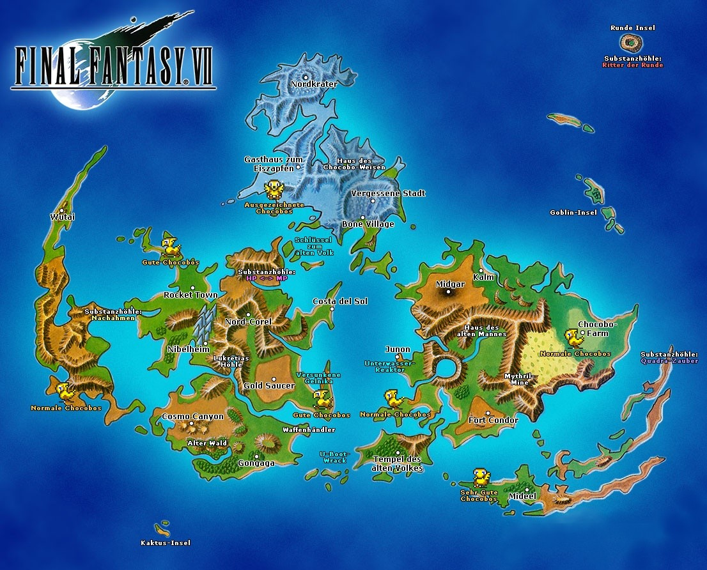

Final Fantasy 7


Soundtrack Abspielen
Weltkarte
Cheats
Chocobo-Extra-Speed


01. Die Schwimmende Stadt
Das atemberaubende Intro geht nahtlos in die erste Mission über: Untersucht die am Boden liegende Wache zweimal, und Ihr bekommt zwei Tränke. Geht nach Norden und erledigt die beiden Shinra-Soldaten. Geht im nächsten Raum zu den Avalanche-Mitgliedern und redet mit ihnen. Dann könnt Ihr die Namen für Barret und euren Hauptcharakter eingeben.
Folgt den Avalanche-Typen bis ins Innere des Reaktors, wo sich Barret euch anschließt. Packt ihn am besten immer in die hintere Reihe, wenn er Fernkampfwaffen benutzt. Redet mit Biggs, damit er die Tür aufmacht, und danach sprecht Ihr Jesse an. Geht in den rechten Raum und schnappt euch die Phönix-Feder. Geht dann in den Aufzug und drückt den Schalter.
Oben angekommen, lauft Ihr die Treppen runter und geht durch die Tür ganz unten. Folgt Jesse und nehmt den Trank, der vor ihr liegt. Klettert weiter nach unten bis zum Speicherpunkt. Lauft den Steg entlang und sammelt die Materia Wiederherstellung ein. Geht zum Reaktor, stellt die Bombe ein und macht euch auf den ersten Bosskampf gefasst.
Boss: Wachskorpion (800 HP)
Der Wachskorpion ist allergisch gegen Clouds [Blitz]-Zauber und sollte damit bearbeitet werden, während Barret auf ihn schießt. Nutzt eure Limit-Techniken, sobald sie verfügbar werden.
Mit seinem „Angriffsfokus“ signalisiert der Boss, welcher Charakter als nächstes angegriffen wird. Wenn der Skorpion anfängt zu zittern und sein Schwanz hochgeht, dürft Ihr ihn nicht mehr angreifen. Heilt – wenn nötig – Cloud und Barret mit Tränken. Sobald der Skorpion seine Abwehrphase beendet, gebt Ihr ihm den Rest!
Danach heißt es spurten, denn Ihr habt nur 10 Minuten Zeit, um aus dem Reaktor zu flüchten! Vergesst nicht, Barret noch schnell das Sturmgewehr auszurüsten, das der Wachskorpion hinterlassen hat, und Jesse anzusprechen, damit Cloud sie befreit. Redet dann oben noch mal mit Jesse und Biggs, damit sie die Türen öffnen.
Wenn euch die Zwischenkämpfe zu sehr auf die Nerven gehen, könnt Ihr durch gleichzeitiges Drücken der Schultertasten (L1 + R1) die Flucht antreten. Nachdem Ihr den Reaktor verlassen habt, explodiert er eindrucksvoll.
Folgt den Avalanche-Typen bis ins Innere des Reaktors, wo sich Barret euch anschließt. Packt ihn am besten immer in die hintere Reihe, wenn er Fernkampfwaffen benutzt. Redet mit Biggs, damit er die Tür aufmacht, und danach sprecht Ihr Jesse an. Geht in den rechten Raum und schnappt euch die Phönix-Feder. Geht dann in den Aufzug und drückt den Schalter.
Oben angekommen, lauft Ihr die Treppen runter und geht durch die Tür ganz unten. Folgt Jesse und nehmt den Trank, der vor ihr liegt. Klettert weiter nach unten bis zum Speicherpunkt. Lauft den Steg entlang und sammelt die Materia Wiederherstellung ein. Geht zum Reaktor, stellt die Bombe ein und macht euch auf den ersten Bosskampf gefasst.
Boss: Wachskorpion (800 HP)
Der Wachskorpion ist allergisch gegen Clouds [Blitz]-Zauber und sollte damit bearbeitet werden, während Barret auf ihn schießt. Nutzt eure Limit-Techniken, sobald sie verfügbar werden.
Mit seinem „Angriffsfokus“ signalisiert der Boss, welcher Charakter als nächstes angegriffen wird. Wenn der Skorpion anfängt zu zittern und sein Schwanz hochgeht, dürft Ihr ihn nicht mehr angreifen. Heilt – wenn nötig – Cloud und Barret mit Tränken. Sobald der Skorpion seine Abwehrphase beendet, gebt Ihr ihm den Rest!
Danach heißt es spurten, denn Ihr habt nur 10 Minuten Zeit, um aus dem Reaktor zu flüchten! Vergesst nicht, Barret noch schnell das Sturmgewehr auszurüsten, das der Wachskorpion hinterlassen hat, und Jesse anzusprechen, damit Cloud sie befreit. Redet dann oben noch mal mit Jesse und Biggs, damit sie die Türen öffnen.
Wenn euch die Zwischenkämpfe zu sehr auf die Nerven gehen, könnt Ihr durch gleichzeitiges Drücken der Schultertasten (L1 + R1) die Flucht antreten. Nachdem Ihr den Reaktor verlassen habt, explodiert er eindrucksvoll.
02. Sektor 7
Nachdem Jesse den Schacht aufgesprengt hat, geht es die Treppe nach oben, wo Ihr auf das Blumenmädchen trefft, das schon im Introvideo zu sehen war. Sie wird euch für 1 Gil eine Blume verkaufen, wenn Ihr zuerst die zweite, dann die erste, und schließlich noch mal die erste Antwort wählt.
Geht in den nächsten Raum und sammelt den Trank ein, bevor Ihr weiter nach Süden geht. Dort werdet Ihr dreimal von Soldaten angehalten. Man kann sie entweder bekämpfen oder vor ihnen weglaufen. Egal wie man sich entscheidet, am Ende wird man von ihnen umzingelt und Cloud springt auf den Zug. Folgt nach dem Gespräch den Avalanche-Mitgliedern in den nächsten Waggon. Sprecht mit Jesse und geht dann zu Barret.
Nach einer netten kleinen Sequenz kommt Ihr am Bahnhof von Sektor 7 an. Geht zu Barret und dann nach links. Oben-links ist ein Typ, der euch die Stütze von Sektor 7 zeigt, und ein Speicherpunkt. Geht nach links, und Ihr kommt zu den Slums.
Sprecht mit Barret vor dem 7. Himmel, um in die Bar zu kommen. Drinnen trefft Ihr auf Clouds alte Jugendfreundin und könnt ihr einen Namen geben. Falls Ihr zuvor eine Blume gekauft habt, könnt Ihr noch wählen, ob Ihr diese an Tifa oder Marlene geben wollt. Wenn Cloud versucht die Bar zu verlassen, stürmt Barret herein. Danach könnt Ihr bei Tifa einen Drink bestellen oder gleich den als Spielautomat verkleideten Aufzug im Hintergrund bedienen, um in das Geheimversteck von Avalanche zu gelangen. Redet dort mit Barret und kehrt wieder nach oben zurück, nachdem Tifa mit euch geredet hat. Wenn Ihr jetzt noch einmal zum Ausgang der Bar geht, hält Tifa euch auf.
Es folgt der erste Flashback nach Nibelheim, wo Tifa und Cloud als Kinder am Brunnen ein Versprechen abgeben. Danach kommt Barret, gibt euch 1.500 Gil und bespricht mit euch den nächsten Einsatz.
Verlasst am nächsten Tag die Bar, geht ins Waffengeschäft und kauft euch drei Eisenreife, die Ihr idealerweise auch gleich ausrüsten solltet. Im zweiten Stock sammelt Ihr die Materia Alle ein und entnehmt der auftauchenden Kiste einen Äther. Im dritten Stock könnt Ihr bei Bedarf für 10 Gil übernachten.
Kauft euch im Substanzladen mindestens eine Feuer- und eine Wiederherstellungs-Substanz. Überhaupt solltet Ihr darauf hinarbeiten, jeden aktiven Charakter im Team möglichst schnell mit einem Heilungszauber auszustatten, aber für den Anfang dürfte der eine reichen. Um die nachfolgenden Kämpfe noch einfacher zu gestalten, empfiehlt es sich zudem, eine weitere Blitz-Materia einzukaufen, sofern euer Budget das zulässt. Verteilt die Substanzen gleichmäßig und sinnvoll im Team, aber achtet darauf, dass Cloud die Kombination [Blitz + Alle] bekommt.
Nun geht es zurück zum Bahnhof. Speichert am besten noch einmal bei der Säule ab, bevor eure Gruppe in den Zug steigt und zur nächsten Mission aufbricht.
Geht in den nächsten Raum und sammelt den Trank ein, bevor Ihr weiter nach Süden geht. Dort werdet Ihr dreimal von Soldaten angehalten. Man kann sie entweder bekämpfen oder vor ihnen weglaufen. Egal wie man sich entscheidet, am Ende wird man von ihnen umzingelt und Cloud springt auf den Zug. Folgt nach dem Gespräch den Avalanche-Mitgliedern in den nächsten Waggon. Sprecht mit Jesse und geht dann zu Barret.
Nach einer netten kleinen Sequenz kommt Ihr am Bahnhof von Sektor 7 an. Geht zu Barret und dann nach links. Oben-links ist ein Typ, der euch die Stütze von Sektor 7 zeigt, und ein Speicherpunkt. Geht nach links, und Ihr kommt zu den Slums.
Sprecht mit Barret vor dem 7. Himmel, um in die Bar zu kommen. Drinnen trefft Ihr auf Clouds alte Jugendfreundin und könnt ihr einen Namen geben. Falls Ihr zuvor eine Blume gekauft habt, könnt Ihr noch wählen, ob Ihr diese an Tifa oder Marlene geben wollt. Wenn Cloud versucht die Bar zu verlassen, stürmt Barret herein. Danach könnt Ihr bei Tifa einen Drink bestellen oder gleich den als Spielautomat verkleideten Aufzug im Hintergrund bedienen, um in das Geheimversteck von Avalanche zu gelangen. Redet dort mit Barret und kehrt wieder nach oben zurück, nachdem Tifa mit euch geredet hat. Wenn Ihr jetzt noch einmal zum Ausgang der Bar geht, hält Tifa euch auf.
Es folgt der erste Flashback nach Nibelheim, wo Tifa und Cloud als Kinder am Brunnen ein Versprechen abgeben. Danach kommt Barret, gibt euch 1.500 Gil und bespricht mit euch den nächsten Einsatz.
Verlasst am nächsten Tag die Bar, geht ins Waffengeschäft und kauft euch drei Eisenreife, die Ihr idealerweise auch gleich ausrüsten solltet. Im zweiten Stock sammelt Ihr die Materia Alle ein und entnehmt der auftauchenden Kiste einen Äther. Im dritten Stock könnt Ihr bei Bedarf für 10 Gil übernachten.
Kauft euch im Substanzladen mindestens eine Feuer- und eine Wiederherstellungs-Substanz. Überhaupt solltet Ihr darauf hinarbeiten, jeden aktiven Charakter im Team möglichst schnell mit einem Heilungszauber auszustatten, aber für den Anfang dürfte der eine reichen. Um die nachfolgenden Kämpfe noch einfacher zu gestalten, empfiehlt es sich zudem, eine weitere Blitz-Materia einzukaufen, sofern euer Budget das zulässt. Verteilt die Substanzen gleichmäßig und sinnvoll im Team, aber achtet darauf, dass Cloud die Kombination [Blitz + Alle] bekommt.
Nun geht es zurück zum Bahnhof. Speichert am besten noch einmal bei der Säule ab, bevor eure Gruppe in den Zug steigt und zur nächsten Mission aufbricht.
03. Reaktor von Sektor 5
Redet mit Tifa im Zug, sobald Ihr Cloud wieder steuern könnt. Danach gibt es einen Alarm und Ihr habt jeweils nur ein paar Sekunden Zeit, um in den nächsten Waggon zu kommen. Es ist aber eigentlich egal, ob und in welchem Waggon euch die Zeit abläuft, da Ihr in jedem Fall aus dem Zug entkommt. Ihr solltet aber wenigstens bis zum zweiten Waggon kommen, wo ein Typ euch einen Hi-Trank gibt, wenn Ihr ihn ansprecht und die erste Antwort wählt.
Nachdem Ihr aus dem Zug gesprungen seid, findet die Gruppe sich in einem Tunnel wieder. Jetzt habt Ihr die Wahl, ob Ihr Richtung Norden lauft und die Story fortsetzt, oder erst ein bisschen Erfahrung sammelt. Am südlichen Ende des Tunnels kommt Ihr zu einer Stelle, an der zwei Shinra-Soldaten stehen. Ihr könnt sie ganz einfach mit einem Blitz-Flächenzauber besiegen und den Kampf beliebig oft wiederholen. So kommt die Gruppe relativ schnell auf Level 10.
Wenn Ihr der Meinung seid, dass es weitergehen kann, kommt Ihr in nördlicher Laufrichtung irgendwann bei einer Lichtschranke an. Untersucht dort den Schacht auf der linken Seite, um dort hinunter zu klettern. Auf dem Weg nach unten findet Ihr einen Äther zum Einsammeln. Klettert dann den nächsten Schacht runter.
Der folgende Bildschirm ist perspektivisch etwas verwirrend: Drückt „unten“, damit Cloud die Leiter hinabsteigt. Geht dann nach links und drückt noch mal „unten“, damit Cloud auf euch zukommt und die Leiter runterklettern kann. Im nächsten Raum gibt es zwei Leitern – beide führen zu dem Ort, an dem Jesse sich aufhält. Links von ihr liegt ein Trank. Geht den linken Schacht runter. Unten angelangt gibt es ein Zelt, euren Kollegen Biggs und einen Speicherpunkt zu entdecken. Benutzt das Zelt, wenn eure Helden stark angeschlagen sind, ansonsten hebt Ihr es für später auf. Klettert die Leiter hoch und rutscht dann die Röhre nach unten.
Dann geht es wieder zu der Tür, die Leitern runter, bis zum Speicherpunkt, genauso wie beim ersten Reaktor. Auf dem Steg zum Schmelzofen kippt Cloud wieder um, und Ihr seht den zweiten Nibelheim-Flashback. Danach könnt Ihr wieder die Bombe legen und umkehren. Oben angelangt, öffnet Ihr die Truhe links und erhaltet einen Äther. Im linken Raum müssen alle drei Avalanche-Mitglieder die Tasten gleichzeitig drücken, damit das Tor aufgeht. Es kann ein paar Versuche erfordern, bis Ihr das passende Timing habt. Benutzt den Speicherpunkt, bevor Ihr weitergeht.
Wenn Ihr den Reaktor verlasst, macht Ihr Bekanntschaft mit Präsident Shinra, einem ganz besonderen Widerling, der euch prompt den nächsten Boss auf den Hals hetzt.
Boss: Airbuster (1.200 HP)
Genau wie der Wachskorpion, ist auch dieser Boss (als Maschine) besonders anfällig für Blitz-Magie. Wer keine passende Materia dabei hat, sollte seine konventionellen Attacken so eintakten, dass sie den Boss von hinten treffen, um mehr Schaden anzurichten. Für eure Limit-Breaks, die hier wahrscheinlich häufiger zum Einsatz kommen werden, gilt das Gleiche.
Beachtet aber, dass jeder Rückenangriff vom Boss gekontert wird! Er dreht sich immer in die Richtung, aus der er zuletzt angegriffen wurde. Wenn ein Charakter in den kritischen Bereich kommt, zögert nicht einen Trank anzuweden oder einen Heilzauber zu sprechen.
Als Belohnung für den Sieg gibt es 180 Erfahrungspunkte sowie einen Titan-Reif. Cloud schafft es jedoch nicht, der Reaktor-Explosion rechtzeitig zu entkommen, und stürzt in die Tiefe...
Nachdem Ihr aus dem Zug gesprungen seid, findet die Gruppe sich in einem Tunnel wieder. Jetzt habt Ihr die Wahl, ob Ihr Richtung Norden lauft und die Story fortsetzt, oder erst ein bisschen Erfahrung sammelt. Am südlichen Ende des Tunnels kommt Ihr zu einer Stelle, an der zwei Shinra-Soldaten stehen. Ihr könnt sie ganz einfach mit einem Blitz-Flächenzauber besiegen und den Kampf beliebig oft wiederholen. So kommt die Gruppe relativ schnell auf Level 10.
Wenn Ihr der Meinung seid, dass es weitergehen kann, kommt Ihr in nördlicher Laufrichtung irgendwann bei einer Lichtschranke an. Untersucht dort den Schacht auf der linken Seite, um dort hinunter zu klettern. Auf dem Weg nach unten findet Ihr einen Äther zum Einsammeln. Klettert dann den nächsten Schacht runter.
Der folgende Bildschirm ist perspektivisch etwas verwirrend: Drückt „unten“, damit Cloud die Leiter hinabsteigt. Geht dann nach links und drückt noch mal „unten“, damit Cloud auf euch zukommt und die Leiter runterklettern kann. Im nächsten Raum gibt es zwei Leitern – beide führen zu dem Ort, an dem Jesse sich aufhält. Links von ihr liegt ein Trank. Geht den linken Schacht runter. Unten angelangt gibt es ein Zelt, euren Kollegen Biggs und einen Speicherpunkt zu entdecken. Benutzt das Zelt, wenn eure Helden stark angeschlagen sind, ansonsten hebt Ihr es für später auf. Klettert die Leiter hoch und rutscht dann die Röhre nach unten.
Dann geht es wieder zu der Tür, die Leitern runter, bis zum Speicherpunkt, genauso wie beim ersten Reaktor. Auf dem Steg zum Schmelzofen kippt Cloud wieder um, und Ihr seht den zweiten Nibelheim-Flashback. Danach könnt Ihr wieder die Bombe legen und umkehren. Oben angelangt, öffnet Ihr die Truhe links und erhaltet einen Äther. Im linken Raum müssen alle drei Avalanche-Mitglieder die Tasten gleichzeitig drücken, damit das Tor aufgeht. Es kann ein paar Versuche erfordern, bis Ihr das passende Timing habt. Benutzt den Speicherpunkt, bevor Ihr weitergeht.
Wenn Ihr den Reaktor verlasst, macht Ihr Bekanntschaft mit Präsident Shinra, einem ganz besonderen Widerling, der euch prompt den nächsten Boss auf den Hals hetzt.
Boss: Airbuster (1.200 HP)
Genau wie der Wachskorpion, ist auch dieser Boss (als Maschine) besonders anfällig für Blitz-Magie. Wer keine passende Materia dabei hat, sollte seine konventionellen Attacken so eintakten, dass sie den Boss von hinten treffen, um mehr Schaden anzurichten. Für eure Limit-Breaks, die hier wahrscheinlich häufiger zum Einsatz kommen werden, gilt das Gleiche.
Beachtet aber, dass jeder Rückenangriff vom Boss gekontert wird! Er dreht sich immer in die Richtung, aus der er zuletzt angegriffen wurde. Wenn ein Charakter in den kritischen Bereich kommt, zögert nicht einen Trank anzuweden oder einen Heilzauber zu sprechen.
Als Belohnung für den Sieg gibt es 180 Erfahrungspunkte sowie einen Titan-Reif. Cloud schafft es jedoch nicht, der Reaktor-Explosion rechtzeitig zu entkommen, und stürzt in die Tiefe...
04. Sektor 6
Cloud kommt in einer kleinen Kirche, durch deren Dach er gefallen ist, zu sich und trifft dort das Blumenmädchen aus den Slums wieder. Sprecht sie zweimal an, damit sie euch ihren Namen sagt. Dann taucht Reno auf. Geht in seine Richtung und redet dann noch einmal mit Aeris. Sie wird euch bitten, ihr bei der Flucht aus der Kirche zu helfen.
Springt im nächsten Raum über die Säule, geht die Treppe hoch und springt über den Abgrund. Dann werden die Soldaten auf Aeris schießen und sie stürzt. Aeris wird dreimal von einem Soldaten bedroht, man kann ihr dann einen von drei Befehlen geben:
- Bei „Durchhalten“ müsst Ihr ein bestimmtes Fass nach unten werfen. Die richtige Reihenfolge ist folgendermaßen: Zuerst das linke Fass, dann das Fass ganz hinten und schließlich das Fass auf der rechten Seite.
- Bei „Kämpfen“ muss sich Aeris einem der Soldaten stellen. Der Kampf kann aufgrund ihrer schwachen Angriffe ein bisschen dauern, ist aber sonst nicht besonders schwierig. Etwas Materia kann hier jedoch nicht schaden.
- Als dritte Möglichkeit gibt es noch „Weglaufen“. Aeris flüchtet dann vor dem Soldaten. Die Igelflöhe, auf die man auf dem Dach trifft, sind übrigens gegen Kälte empfindlich.
Wenn Aeris oben angelangt ist, kann man auf das Dach der Kirche fliehen. Nach einem kurzen Gespräch geht es über die Schrottteile wieder nach unten. Links wartet ein weiterer Speicherpunkt. Geht durch den linken Ausgang und dann nach oben, und Ihr gelangt in die Slums.
Im Substanzladen gibt es keine neuen Substanzen. Kauft aber auf jeden Fall zwei Titan-Reife und rüstet Cloud und Aeris damit aus. Der dritte ist für einen Charakter, der in Kürze zu euch stoßen wird. Kauft im Objektladen noch so viele Granaten, wie Ihr für euer Geld bekommen könnt. Sie werden sich vor allem in den nachfolgenden Bossbegegnungen als nützlich erweisen. Für Heiltränke oder Gegenmittel solltet Ihr jetzt noch kein Geld ausgeben.
Geht in das Haus ganz rechts und in den ersten Stock. An der Wand hängt der erste Zettel des Schildkröten-Rundschreibens. Vom schlafenden Jungen, der auf dem Bett liegt, erfahrt Ihr, dass er ein geheimes Versteck in seiner Kommode hat. Wenn Cloud die Schubladen genauer untersucht, findet er 5 Gil, die er mitnehmen oder liegenlassen kann. Lasst das Geld liegen, damit der Junge euch später einen Turbo-Äther schenkt.
Verlasst das Haus und begebt euch weiter nach rechts. Bevor Ihr nun Aeris‘ Haus betretet, solltet Ihr einmal den Garten erkunden. Cloud findet dort einen Äther und die Materia Schutz, welche er sogleich ausrüsten sollte. In Aeris‘ Haus folgt die nächste Rückblende.
In der Nacht wird Cloud versuchen, sich unbemerkt aus dem Haus zu schleichen, doch eine knarrende Bodenplatte verrät ihn. Bewegt euch langsam am Treppengeländer entlang, um nicht von Aeris erwischt zu werden. Vergesst nicht, das Paket einzusammeln, das direkt beim Ausgang des Schlafzimmers liegt. Es enthält einen Trank und eine Phönix-Feder.
Verlasst das Haus und die Slums, danach geht es weiter nach links, wo Aeris verblüffenderweise schon auf euch wartet. Überprüft euer Setup, bevor es nun weiter Richtung Wall Market geht. Auf dem Weg dorthin könnt Ihr Aeris ein wenig aufleveln. Sorgt aber dafür, dass sie immer in der hinteren Kampfreihe steht!
Auf dem Spielplatz werden Aeris und Cloud eine merkwürdige Kutsche sehen. Das Mädchen, das darauf mitfährt, hat erstaunliche Ähnlichkeit mit Tifa.
Springt im nächsten Raum über die Säule, geht die Treppe hoch und springt über den Abgrund. Dann werden die Soldaten auf Aeris schießen und sie stürzt. Aeris wird dreimal von einem Soldaten bedroht, man kann ihr dann einen von drei Befehlen geben:
- Bei „Durchhalten“ müsst Ihr ein bestimmtes Fass nach unten werfen. Die richtige Reihenfolge ist folgendermaßen: Zuerst das linke Fass, dann das Fass ganz hinten und schließlich das Fass auf der rechten Seite.
- Bei „Kämpfen“ muss sich Aeris einem der Soldaten stellen. Der Kampf kann aufgrund ihrer schwachen Angriffe ein bisschen dauern, ist aber sonst nicht besonders schwierig. Etwas Materia kann hier jedoch nicht schaden.
- Als dritte Möglichkeit gibt es noch „Weglaufen“. Aeris flüchtet dann vor dem Soldaten. Die Igelflöhe, auf die man auf dem Dach trifft, sind übrigens gegen Kälte empfindlich.
Wenn Aeris oben angelangt ist, kann man auf das Dach der Kirche fliehen. Nach einem kurzen Gespräch geht es über die Schrottteile wieder nach unten. Links wartet ein weiterer Speicherpunkt. Geht durch den linken Ausgang und dann nach oben, und Ihr gelangt in die Slums.
Im Substanzladen gibt es keine neuen Substanzen. Kauft aber auf jeden Fall zwei Titan-Reife und rüstet Cloud und Aeris damit aus. Der dritte ist für einen Charakter, der in Kürze zu euch stoßen wird. Kauft im Objektladen noch so viele Granaten, wie Ihr für euer Geld bekommen könnt. Sie werden sich vor allem in den nachfolgenden Bossbegegnungen als nützlich erweisen. Für Heiltränke oder Gegenmittel solltet Ihr jetzt noch kein Geld ausgeben.
Geht in das Haus ganz rechts und in den ersten Stock. An der Wand hängt der erste Zettel des Schildkröten-Rundschreibens. Vom schlafenden Jungen, der auf dem Bett liegt, erfahrt Ihr, dass er ein geheimes Versteck in seiner Kommode hat. Wenn Cloud die Schubladen genauer untersucht, findet er 5 Gil, die er mitnehmen oder liegenlassen kann. Lasst das Geld liegen, damit der Junge euch später einen Turbo-Äther schenkt.
Verlasst das Haus und begebt euch weiter nach rechts. Bevor Ihr nun Aeris‘ Haus betretet, solltet Ihr einmal den Garten erkunden. Cloud findet dort einen Äther und die Materia Schutz, welche er sogleich ausrüsten sollte. In Aeris‘ Haus folgt die nächste Rückblende.
In der Nacht wird Cloud versuchen, sich unbemerkt aus dem Haus zu schleichen, doch eine knarrende Bodenplatte verrät ihn. Bewegt euch langsam am Treppengeländer entlang, um nicht von Aeris erwischt zu werden. Vergesst nicht, das Paket einzusammeln, das direkt beim Ausgang des Schlafzimmers liegt. Es enthält einen Trank und eine Phönix-Feder.
Verlasst das Haus und die Slums, danach geht es weiter nach links, wo Aeris verblüffenderweise schon auf euch wartet. Überprüft euer Setup, bevor es nun weiter Richtung Wall Market geht. Auf dem Weg dorthin könnt Ihr Aeris ein wenig aufleveln. Sorgt aber dafür, dass sie immer in der hinteren Kampfreihe steht!
Auf dem Spielplatz werden Aeris und Cloud eine merkwürdige Kutsche sehen. Das Mädchen, das darauf mitfährt, hat erstaunliche Ähnlichkeit mit Tifa.
05. Wall Market
Geht durch den Durchgang rechts zum „Gasthaus zur Honigbiene“. Redet dort mit dem grauhaarigen Mann und wählt die erste Antwortmöglichkeit. Danach wieder nach links und dann schnurstracks durch den nördlichen Ausgang, und dann durch den Eingang des größeren Gebäudes im Norden. Redet dort mit dem Türsteher. Aeris wird einen Plan ersinnen, um in Don Corneos Anwesen zu gelangen, auf Kosten des armen Cloud. Dieser braucht jetzt ein Kleid und schickes Make-Up.
Verlasst die Szene und den nächsten Abschnitt gen Süden, und betretet die Boutique auf der linken Seite. Von der Verkäuferin erfahrt Ihr, wo Cloud sein Kostüm herbekommt. Verlasst den Laden wieder, geht nach Norden und dann ins Café auf der linken Seite. Redet mit dem Mann, der an der Bar sitzt. Er wird euch ein Kleid ganz nach euren Wünschen nähen:
- Baumwollkleid (1. Wahl: Sauber | 2. Wahl: Glänzend)
- Seidenkleid (1. Wahl: Weich | 2. Wahl: Schimmernd)
- Satinkleid (1. Wahl: Weich | 2. Wahl: Glänzend)
Um die besten Chancen bei Don Corneo zu haben, solltet Ihr euch für das Seidenkleid entscheiden, die anderen sind aber auch okay.
Danach geht es wieder in die Boutique zur Kleideranprobe. Was jetzt noch fehlt, ist eine Perücke. Um sie zu bekommen, geht es (wieder mal) zum nördlichen Abschnitt und dann ins Fitness-Studio auf der rechten Seite. Dort heißt es nun erst mal gegen den Big Bro antreten. Dazu muss man Kniebeugen machen. Wie das geht, erklärt einem der Schöne Bro. Übt am besten vorher einmal. Je nachdem wie sich Cloud schlägt, bekommt er eine von drei Perücken:
- Blonde Perücke (Mehr Kniebeugen als Big Bro)
- Zerwühlte Perücke (Weniger Kniebeugen als Big Bro)
- Gefärbte Perücke (Unentschieden)
Das Kleid und die Perücke reichen eigentlich schon aus, um weiterzukommen. Aber da wir schon dabei sind und weil es so viel Spaß macht, können wir den guten Cloud auch komplett ausstatten.
Geht in den südlichen Abschnitt. In der oberen Hütte in der Mitte findet Ihr ein Restaurant. Bestellt dort ein beliebiges Essen und antwortet danach mit der zweiten Option. Ihr erhaltet einen Gutschein, den Ihr in der Apotheke südlich des Restaurants gegen eines von drei Mitteln eintauschen könnt. Damit geht Ihr gleich wieder ins Restaurant und gebt der Dame, die das WC blockiert, das Mittel. Je nachdem was Ihr in der Apotheke mitgenommen habt, bekommt Ihr ein anderes Parfum:
- Eau de Cologne (Mittel: Desinfektionsmittel)
- Rosenparfum (Mittel: Deodorant)
- Sexy Parfum (Mittel: Abführmittel)
Verlasst das Restaurant und kehrt zum südlichen Abschnitt zurück. Sprecht mit dem Mann unten-rechts, wo es zur Honigbiene geht. Er überlässt euch seinen Mitgliedsausweis, mit dem euch der Türsteher nun ins „Gasthaus“ einlässt (es bleibt ganz euch überlassen, als was Ihr diese Einrichtung betrachtet). Dort könnt Ihr in die beiden rechten Zimmer reinlunsen und eines der beiden linken Zimmer für den Eigenbedarf benutzen.
Im oberen Zimmer (der „&$#%-Raum“) erhaltet Ihr duftende Unterwäsche, wenn Ihr nach dem „Massage-Programm“ das Mädchen im Bienenkostüm ansprecht. Im unteren Raum wartet ein Bad mit neun Männern auf euch und Ihr bekommt einen Bikini-Slip geschenkt. Geht auch in die Umkleide der Bienen und lasst euch von dem Mädchen ganz links etwas Schminke auftragen.
Das war aber noch nicht alles! Wenn Ihr den Materiahändler im Nordosten von Wall Market besucht, wird er Cloud um einen Gefallen „unter Männern“ bitten. Mietet euch ein Zimmer im Hotel und untersucht in der Nacht den Verkaufsautomaten, der im Flur steht. Je nachdem wieviel Geld man einwirft, erhält man ein mehr oder weniger wertvolles Diadem beim Materiahändler:
- Glasdiadem (Ausgegeben: 50 Gil)
- Rubindiadem (Ausgegeben: 100 Gil)
- Diamantdiadem (Ausgegeben: 200 Gil)
Nachdem man die optionalen Erledigungen gemacht (oder ausgelassen) hat, kann es nun endlich zu Don Corneos Villa gehen. Optimiert bei Bedarf vorher noch die Ausrüstung der Gruppe beim Waffenhändler. Es gibt eine Mythril-Stange für Aeris und eine Metallfaust für Tifa zu kaufen. Die teuren Mythril-Armbänder sind ebenfalls ein willkommenes Upgrade. Gerne könnt Ihr auch vorher noch mal abspeichern.
In Corneos Villa angekommen, geht es nach einem kurzen Gespräch die Treppe hinauf, in den linken Raum und die Treppe runter. Aeris lernt hier nun Tifa kennen, und ein Zickenstreit entfacht. Nehmt den Äther an euch und checkt eure Ausrüstung, bevor Ihr wieder nach oben und in Corneos „Büro“ lauft.
Je nachdem welche Kostümteile Ihr bei euch habt, wird Don Corneo eines der drei „Mädchen“ auswählen. Wählt er Tifa oder Aeris, wird Cloud in Scotchs Zimmer gebracht. Redet dort mehrmals mit ihm und es kommt zu einem Kampf: Die ersten drei Gegner lassen sich mit der zuverlässigen Kombination [Blitz + Alle] sofort ausschalten. Beim zweiten Mal erwischt es nur zwei Gegner, da Scotch etwas widerstandsfähiger ist. Mit ein paar gezielten Schwerthieben lässt aber auch er sich bezwingen. Sammelt die Phönix-Feder rechts im Raum ein und geht wieder in den Keller, wo Ihr auf Tifa oder Aeris trefft. Danach geht es wieder in Corneos Zimmer zum Showdown.
Ganz egal, welches Mädchen gewählt wurde und wie euer Gespräch mit Corneo verläuft, wird er euch in eine Falle locken, und die Gruppe landet schließlich in den Abwässern.
Verlasst die Szene und den nächsten Abschnitt gen Süden, und betretet die Boutique auf der linken Seite. Von der Verkäuferin erfahrt Ihr, wo Cloud sein Kostüm herbekommt. Verlasst den Laden wieder, geht nach Norden und dann ins Café auf der linken Seite. Redet mit dem Mann, der an der Bar sitzt. Er wird euch ein Kleid ganz nach euren Wünschen nähen:
- Baumwollkleid (1. Wahl: Sauber | 2. Wahl: Glänzend)
- Seidenkleid (1. Wahl: Weich | 2. Wahl: Schimmernd)
- Satinkleid (1. Wahl: Weich | 2. Wahl: Glänzend)
Um die besten Chancen bei Don Corneo zu haben, solltet Ihr euch für das Seidenkleid entscheiden, die anderen sind aber auch okay.
Danach geht es wieder in die Boutique zur Kleideranprobe. Was jetzt noch fehlt, ist eine Perücke. Um sie zu bekommen, geht es (wieder mal) zum nördlichen Abschnitt und dann ins Fitness-Studio auf der rechten Seite. Dort heißt es nun erst mal gegen den Big Bro antreten. Dazu muss man Kniebeugen machen. Wie das geht, erklärt einem der Schöne Bro. Übt am besten vorher einmal. Je nachdem wie sich Cloud schlägt, bekommt er eine von drei Perücken:
- Blonde Perücke (Mehr Kniebeugen als Big Bro)
- Zerwühlte Perücke (Weniger Kniebeugen als Big Bro)
- Gefärbte Perücke (Unentschieden)
Das Kleid und die Perücke reichen eigentlich schon aus, um weiterzukommen. Aber da wir schon dabei sind und weil es so viel Spaß macht, können wir den guten Cloud auch komplett ausstatten.
Geht in den südlichen Abschnitt. In der oberen Hütte in der Mitte findet Ihr ein Restaurant. Bestellt dort ein beliebiges Essen und antwortet danach mit der zweiten Option. Ihr erhaltet einen Gutschein, den Ihr in der Apotheke südlich des Restaurants gegen eines von drei Mitteln eintauschen könnt. Damit geht Ihr gleich wieder ins Restaurant und gebt der Dame, die das WC blockiert, das Mittel. Je nachdem was Ihr in der Apotheke mitgenommen habt, bekommt Ihr ein anderes Parfum:
- Eau de Cologne (Mittel: Desinfektionsmittel)
- Rosenparfum (Mittel: Deodorant)
- Sexy Parfum (Mittel: Abführmittel)
Verlasst das Restaurant und kehrt zum südlichen Abschnitt zurück. Sprecht mit dem Mann unten-rechts, wo es zur Honigbiene geht. Er überlässt euch seinen Mitgliedsausweis, mit dem euch der Türsteher nun ins „Gasthaus“ einlässt (es bleibt ganz euch überlassen, als was Ihr diese Einrichtung betrachtet). Dort könnt Ihr in die beiden rechten Zimmer reinlunsen und eines der beiden linken Zimmer für den Eigenbedarf benutzen.
Im oberen Zimmer (der „&$#%-Raum“) erhaltet Ihr duftende Unterwäsche, wenn Ihr nach dem „Massage-Programm“ das Mädchen im Bienenkostüm ansprecht. Im unteren Raum wartet ein Bad mit neun Männern auf euch und Ihr bekommt einen Bikini-Slip geschenkt. Geht auch in die Umkleide der Bienen und lasst euch von dem Mädchen ganz links etwas Schminke auftragen.
Das war aber noch nicht alles! Wenn Ihr den Materiahändler im Nordosten von Wall Market besucht, wird er Cloud um einen Gefallen „unter Männern“ bitten. Mietet euch ein Zimmer im Hotel und untersucht in der Nacht den Verkaufsautomaten, der im Flur steht. Je nachdem wieviel Geld man einwirft, erhält man ein mehr oder weniger wertvolles Diadem beim Materiahändler:
- Glasdiadem (Ausgegeben: 50 Gil)
- Rubindiadem (Ausgegeben: 100 Gil)
- Diamantdiadem (Ausgegeben: 200 Gil)
Nachdem man die optionalen Erledigungen gemacht (oder ausgelassen) hat, kann es nun endlich zu Don Corneos Villa gehen. Optimiert bei Bedarf vorher noch die Ausrüstung der Gruppe beim Waffenhändler. Es gibt eine Mythril-Stange für Aeris und eine Metallfaust für Tifa zu kaufen. Die teuren Mythril-Armbänder sind ebenfalls ein willkommenes Upgrade. Gerne könnt Ihr auch vorher noch mal abspeichern.
In Corneos Villa angekommen, geht es nach einem kurzen Gespräch die Treppe hinauf, in den linken Raum und die Treppe runter. Aeris lernt hier nun Tifa kennen, und ein Zickenstreit entfacht. Nehmt den Äther an euch und checkt eure Ausrüstung, bevor Ihr wieder nach oben und in Corneos „Büro“ lauft.
Je nachdem welche Kostümteile Ihr bei euch habt, wird Don Corneo eines der drei „Mädchen“ auswählen. Wählt er Tifa oder Aeris, wird Cloud in Scotchs Zimmer gebracht. Redet dort mehrmals mit ihm und es kommt zu einem Kampf: Die ersten drei Gegner lassen sich mit der zuverlässigen Kombination [Blitz + Alle] sofort ausschalten. Beim zweiten Mal erwischt es nur zwei Gegner, da Scotch etwas widerstandsfähiger ist. Mit ein paar gezielten Schwerthieben lässt aber auch er sich bezwingen. Sammelt die Phönix-Feder rechts im Raum ein und geht wieder in den Keller, wo Ihr auf Tifa oder Aeris trefft. Danach geht es wieder in Corneos Zimmer zum Showdown.
Ganz egal, welches Mädchen gewählt wurde und wie euer Gespräch mit Corneo verläuft, wird er euch in eine Falle locken, und die Gruppe landet schließlich in den Abwässern.
06. Kanalisation
Überprüft die Ausrüstung der Gruppe, bevor Ihr Tifa und Aeris vom Boden aufhebt. Denn es folgt ein Bosskampf gegen Corneos Haustier.
Boss: Aps (1.800 HP)
Sein stärkster Angriff, die Flutwelle, fügt nicht nur eurer Gruppe, sondern auch Aps selbst Schaden zu. Je nachdem von welcher Richtung die Welle kommt, erleidet Ihr unterschiedlichen Schaden. Heilt eure Charaktere immer rechtzeitig, und nutzt [Feuer]-Magie, Limit-Breaks und Waffen zum Angriff.
Falls Ihr zuvor ein paar Granaten eingekauft habt, kann Aeris damit guten Schaden machen, oder sie setzt auf [Blitz]-Attacken. Wenn Cloud schon sein zweites Limit [Querhieb] beherrscht, könnt Ihr Aps damit kurzzeitig lähmen – eine perfekte Gelegenheit um Wunden zu heilen. Aeris‘ Spezialfähigkeit [Heilender Wind] ist hier natürlich auch ungemein praktisch.
Geht nach dem Kampf die Treppe hoch und holt euch den Trank. Über zwei Leitern und eine Treppe geht es zu einem Schacht, den man runterspringen kann. Vergesst aber nicht, vorher die Materia Stehlen einzusammeln. Rüstet sie am besten an Cloud aus, da er am meisten in der Party ist. Danach geht es noch eine Leiter hoch, und schon seid Ihr draußen.
Boss: Aps (1.800 HP)
Sein stärkster Angriff, die Flutwelle, fügt nicht nur eurer Gruppe, sondern auch Aps selbst Schaden zu. Je nachdem von welcher Richtung die Welle kommt, erleidet Ihr unterschiedlichen Schaden. Heilt eure Charaktere immer rechtzeitig, und nutzt [Feuer]-Magie, Limit-Breaks und Waffen zum Angriff.
Falls Ihr zuvor ein paar Granaten eingekauft habt, kann Aeris damit guten Schaden machen, oder sie setzt auf [Blitz]-Attacken. Wenn Cloud schon sein zweites Limit [Querhieb] beherrscht, könnt Ihr Aps damit kurzzeitig lähmen – eine perfekte Gelegenheit um Wunden zu heilen. Aeris‘ Spezialfähigkeit [Heilender Wind] ist hier natürlich auch ungemein praktisch.
Geht nach dem Kampf die Treppe hoch und holt euch den Trank. Über zwei Leitern und eine Treppe geht es zu einem Schacht, den man runterspringen kann. Vergesst aber nicht, vorher die Materia Stehlen einzusammeln. Rüstet sie am besten an Cloud aus, da er am meisten in der Party ist. Danach geht es noch eine Leiter hoch, und schon seid Ihr draußen.
07. Der Eisenbahnfriedhof
Die Gegner hier vertragen bei niedrigem Level der Gruppe einige Angriffe. Die Geister verschwinden nach jedem Treffer kurz und können währenddessen nicht angegriffen werden. Für Sammel-Enthusiasten besitzen sie übrigens den seltenen Verbrauchsgegenstand Geisterhand, der MP vom Gegner absorbiert. Klaut euch ein paar Exemplare davon oder zumindest einen, um diesen später mittels [2x-Item]-Trick vervielfältigen zu können.
Besonders interessant ist der Gegner Eligor, der ziemlich selten auftaucht. Er ist schwer zu bestehlen, aber es lohnt sich, denn der erhaltene Schlagstock wird Aeris‘ Stärke verdoppeln!
Betretet den ersten Waggon und verlasst ihn durch den Ausgang. Untersucht das Fass, es enthält einen Hi-Trank. Geht wieder zurück zum Speicherpunkt und klettert über die Leiter auf das Dach des Waggons und sammelt einen weiteren Hi-Trank ein. Geht links über den Stahlbalken auf den Boden. Im Norden steht ein Fass mit einem Echoschirm. Geht durch den Waggon rechts, sammelt den Trank ein und klettert die Leiter hoch. Weiter nördlich ist eine weitere Leiter, die Ihr runterklettert. Durchquert den nächsten Waggon und sammelt einen weiteren Trank ein, bevor Ihr den nächsten Bildschirm betretet.
Geht nach links unten und holt den Trank – noch weiter links findet Ihr ein Fass mit einem Äther. Geht nun zu den polygonen Zügen, fahrt erst mit dem unteren, dann mit dem oberen Zug. Klettert die Leiter zum rechten Waggon hoch, sammelt den Hi-Trank ein und geht über den oberen polygonen Zug. Klettert die Leiter nach unten und verlasst den Friedhof nach links. Die Säule steht, aber wie lange noch?
Besonders interessant ist der Gegner Eligor, der ziemlich selten auftaucht. Er ist schwer zu bestehlen, aber es lohnt sich, denn der erhaltene Schlagstock wird Aeris‘ Stärke verdoppeln!
Betretet den ersten Waggon und verlasst ihn durch den Ausgang. Untersucht das Fass, es enthält einen Hi-Trank. Geht wieder zurück zum Speicherpunkt und klettert über die Leiter auf das Dach des Waggons und sammelt einen weiteren Hi-Trank ein. Geht links über den Stahlbalken auf den Boden. Im Norden steht ein Fass mit einem Echoschirm. Geht durch den Waggon rechts, sammelt den Trank ein und klettert die Leiter hoch. Weiter nördlich ist eine weitere Leiter, die Ihr runterklettert. Durchquert den nächsten Waggon und sammelt einen weiteren Trank ein, bevor Ihr den nächsten Bildschirm betretet.
Geht nach links unten und holt den Trank – noch weiter links findet Ihr ein Fass mit einem Äther. Geht nun zu den polygonen Zügen, fahrt erst mit dem unteren, dann mit dem oberen Zug. Klettert die Leiter zum rechten Waggon hoch, sammelt den Hi-Trank ein und geht über den oberen polygonen Zug. Klettert die Leiter nach unten und verlasst den Friedhof nach links. Die Säule steht, aber wie lange noch?
08. Stütze von Sektor 7
Redet mit Wedge, der am Boden liegt. Dann geht es die Säule rauf. Die Gegner, auf die man trifft, sind ziemlich widerstandsfähig und sollten mit [Blitz]-Magie bearbeitet werden. Ganz oben auf der Stütze trefft Ihr Reno von den Turks.
Boss: Reno (1.000 HP)
[Blitz]-Zauber sind hier wirkungslos, greift ihn also nur mit [Eis] oder [Feuer] an. Auch eure Waffen richten guten Schaden an. Die Pyramiden, die er abschießt, können mit einem Hieb wieder zerstört werden. Visiert dazu einfach den darin gefangenen Charakter an. Nutzt eure Limit-Breaks wann immer sie aufleuchten. Nach einer Weile wird Reno den Kampf beenden.
Cloud, Tifa und Barret können die bevorstehende Explosion nicht verhindern. Die Platte stürzt herab und begräbt Sektor 7 unter sich.
Boss: Reno (1.000 HP)
[Blitz]-Zauber sind hier wirkungslos, greift ihn also nur mit [Eis] oder [Feuer] an. Auch eure Waffen richten guten Schaden an. Die Pyramiden, die er abschießt, können mit einem Hieb wieder zerstört werden. Visiert dazu einfach den darin gefangenen Charakter an. Nutzt eure Limit-Breaks wann immer sie aufleuchten. Nach einer Weile wird Reno den Kampf beenden.
Cloud, Tifa und Barret können die bevorstehende Explosion nicht verhindern. Die Platte stürzt herab und begräbt Sektor 7 unter sich.
09. Rückkehr zum Wall Market
Nach einem etwas längeren Gespräch geht es weiter über die Straße bis zu Aeris‘ Haus, in dem Elmyra etwas mehr über die Vergangenheit erzählt. Danach geht es zum Wall Market. Vergesst aber nicht, auf dem Spielplatz die Materia Erkennen einzusammeln. Damit könnt Ihr Feinde auf eventuelle Schwachpunkte analysieren.
Geht zum Waffenhändler. Dort kauft Ihr dem Typen auf dem Panzer ein paar Batterien ab, und geht nach Norden und dann nach rechts zu dem Kabel, wo die Kinder spielen.
Klettert rauf und setzt rechts die erste Batterie ein. Über den Propeller geht es weiter. Bei der Schranke braucht Ihr die zweite Batterie. Klettert weiter nach oben, bis zu der Stange, die hin und her pendelt. Klettert hier aber erst mal noch weiter rauf, und benutzt eure dritte Batterie, um einen Äther zu erhalten.
Jetzt geht es wieder nach unten. Hier müsst Ihr die pendelnde Stange erwischen. Das erfordert etwas Übung. Der ideale Zeitpunkt zum Absprung ist, wenn die Stange nach links gependelt ist und gerade im Begriff ist nach rechts zu pendeln. Man hört zum optimalen Absprungzeitpunkt auch ein leichtes Quitschgeräusch.
Danach klettert Ihr weiter nach oben, bis Ihr beim Shinra-Hauptquartier angekommen seid.
Geht zum Waffenhändler. Dort kauft Ihr dem Typen auf dem Panzer ein paar Batterien ab, und geht nach Norden und dann nach rechts zu dem Kabel, wo die Kinder spielen.
Klettert rauf und setzt rechts die erste Batterie ein. Über den Propeller geht es weiter. Bei der Schranke braucht Ihr die zweite Batterie. Klettert weiter nach oben, bis zu der Stange, die hin und her pendelt. Klettert hier aber erst mal noch weiter rauf, und benutzt eure dritte Batterie, um einen Äther zu erhalten.
Jetzt geht es wieder nach unten. Hier müsst Ihr die pendelnde Stange erwischen. Das erfordert etwas Übung. Der ideale Zeitpunkt zum Absprung ist, wenn die Stange nach links gependelt ist und gerade im Begriff ist nach rechts zu pendeln. Man hört zum optimalen Absprungzeitpunkt auch ein leichtes Quitschgeräusch.
Danach klettert Ihr weiter nach oben, bis Ihr beim Shinra-Hauptquartier angekommen seid.
10. Das Shinra-Hauptquartier
Es gibt zwei Möglichkeiten, das Gebäude zu betreten: Entweder Ihr geht links am Haupteingang vorbei und benutzt dort die endlos anmutenden Treppen, oder Ihr nehmt die harte Route und stürmt den Laden einfach – Barret wird natürlich Letzteres bevorzugen. Wenn Ihr die Treppen benutzt, verpasst Ihr jedoch den zweiten Schildkröten-Flyer und könnt diesen erst sehr viel später im Spiel holen.
Während eures Aufenthalts im HQ gibt es zwei Gegner, nach denen Ihr besonders Ausschau halten solltet, da sie gute Sachen zum Stehlen haben: Mottenschlächter tragen einen Karbon-Reif, der für lange Zeit eure beste Rüstung sein wird. Für Cloud gibt es hier außerdem die Hartklinge, welche Ihr von einem Gegner namens „Soldat 3“ klauen könnt. Ein besseres Schwert werdet Ihr so schnell nicht finden.
Und so kommt Ihr weiter, wenn Ihr den Laden stürmt:
Erdgeschoss
Nach dem Empfang geht es nördlich zum Aushangsbrett, an dem der zweite Zettel vom Schildkrötenrundschreiben auf euch wartet. Wenn Ihr ihn jetzt verpasst, bietet sich erst sehr viel später im Spiel die nächste Gelegenheit, den Flyer zu lesen.
1. Stock
Hier gibt es einen Laden, in dem man Objekte kaufen kann. Links beim Fernseher kann man sich eine interessante Rendersequenz ansehen. Die beiden Truhen hinter der Verkäuferin lassen sich an dieser Stelle des Spiels noch nicht öffnen.
Zurück in der Halle betreten wir den Aufzug, welcher uns – nach einer kampflastigen Fahrt – in die oberen Etagen des Gebäudes befördert. Ab hier läuft das Spiel unabhängig davon weiter, ob Ihr die Treppen oder den Haupteingang genommen habt.
59. Stock
Geht nach rechts und macht die starken Kämpfer fertig. Sie müssen erst aus ihrer Roboterschale geprügelt werden, beziehungsweise rausgeblitzt, da fast alle Gegner im Shinra-Gebäude allergisch gegen Blitzmagie sind. Als Souvenir hinterlassen sie die Codekarte 60. Damit geht's auch gleich mit dem Aufzug in den nächsten Stock.
60. Stock
Hier müssen die Wachen ausgetrickst werden. Bei den ersten beiden ist das kein Problem, lauft einfach weiter, wenn die Wachen selbst laufen. Bei den nächsten Wachen wartet Ihr, bis beide links sind. Dann wechseln sie erst mal ihre Position. Wenn sie danach nach rechts rennen, kann man zur ersten Statue spurten. Dann wechseln die Wachen nochmals ihre Position. Sobald sie wieder nach links laufen, könnt Ihr euch vorbeischleichen. Wiederholt das Ganze dann mit Barret und Tifa.
Wenn Ihr erwischt werdet, kommt es zum Kampf. Nach ein paar Kämpfen verschwinden die Wachen komplett, und Ihr habt zum Trost über eure Schmach immerhin ein paar Erfahrungspunkte geerntet. Über die Treppe geht es weiter ins nächste Stockwerk.
61. Stock
Der Mann am Aufzug erklärt euch das Codekartensystem der Aufzüge. Sprecht einen der beiden Männer im grauen Anzug an und antwortet mit der zweiten Möglichkeit, um Codekarte 62 zu bekommen. Diese wird sogleich im Aufzug benutzt.
62. Stock
Hier müsst Ihr das korrekte Passwort für Bürgermeister Domino herausfinden, damit er euch die nächste Codekarte gibt. Erratet Ihr es auf Anhieb korrekt, schenkt er euch die Substanz Nebenwirkung, welche Ihr in eurer Waffe oder Rüstung mit einer elementaren Substanz wie z. B. [Feuer] oder [Blitz] kombinieren könnt. Eure Angriffe erhalten dadurch Element-Schaden bzw. eure Rüstung reduziert solchen.
Auf den zweiten Versuch gibt's ein Elixier, auf drei Versuche einen Äther, und auf vier Versuche immerhin noch einen Trank. Wenn Ihr die englische oder japanische Version des Spiels habt, müsst Ihr in der naheliegenden Bibliothek ein paar Nachforschungen anstellen, um das Passwort herauszufinden – ein unglaublich nerviges Unterfangen.
Tipp: Die Lösungen „ORBS“ und „HOJO“ sind immer falsch.
In der deutschen (und anderen lokalisierten Versionen) lautet das Passwort aufgrund eines Bugs immer „MAKO“, also braucht Ihr in diesem Stockwerk gar nicht viel Zeit zu vertrödeln und bekommt die Codekarte 63 quasi geschenkt.
63. Stock
Sprecht den Computer an und Ihr dürft drei Türen in diesem Stockwerk öffnen. Alle drei Coupons in diesem Stockwerk zu bekommen ist relativ einfach: Lauft nach ganz rechts, dann nach ganz oben, dann nach links. Öffnet die Tür, die den weiteren Weg nach links versperrt. Geht weiter nach links, wo man die Wahl zwischen der linken und der unteren Tür hat. Öffnet die untere und geht in den Raum, in dem der erste Coupon liegt. Nehmt ihn mit und klettert dann in den Lüftungsschacht.
Kriecht nach unten, dann nach rechts und dann wieder nach oben. In dem Zimmer, in dem Ihr jetzt landet, sammelt Ihr den zweiten Coupon ein. Verlasst den Raum durch den südlichen Ausgang und öffnet die Tür links, was euch Zutritt zum mittleren Raum und somit zum dritten Coupon verschafft.
Über den Lüftungsschacht geht es wieder in den Raum mit dem Computer, wo sich die Coupons einlösen lassen. Ihr bekommt einen Sternenanhänger (schützt vor Gift), eine Viererschacht-Rüstung und ein weiteres Exemplar der Materia Alle. Diese möchtet Ihr vielleicht mit einem Heilzauber kombinieren.
64. Stock
Links kann man kostenlos rasten und speichern, was auch ratsam wäre. Im mittleren Raum könnt Ihr am Automaten ein „Sports Gym“ kaufen. Die Maschine verschluckt zwar euer Geld, aber es lohnt sich dennoch.
In der Umkleidekabine weiter oben entdeckt Ihr eine Phönix-Feder und ein ... Megaphon? Letzteres scheint für Cloud nutzlos zu sein, also legt er es zurück.
65. Stock
Betretet den Raum mit dem Midgar-Modell, damit es hochfährt. In diesem Stockwerk müsst Ihr immer eine bestimmte Truhe öffnen und die darin gefundenen Teile im Modell einsetzen. Die Reihenfolge ist folgende:
1. Untere Truhe im Raum oben-links
2. Untere Truhe im Raum unten-links
3. Obere Truhe im Raum unten-links
4. Truhe im Raum oben-rechts
5. Obere Truhe im Raum oben-links
Habt Ihr alle Teile eingesetzt, lässt sich die Truhe im Raum ganz rechts öffnen und Ihr bekommt die Codekarte 66.
66. Stock
Geht nach oben-links zur Toilette, spült ein paarmal durch (kann ja nicht schaden) und klettert dann hoch. Am Ende des Schachts könnt Ihr eine Shinra-Konferenz belauschen, danach geht es wieder aus dem Schacht. Folgt Hojo dann in die nächste Etage.
67. Stock
Folgt Hojo weiter, und Ihr macht zum ersten Mal Bekanntschaft mit Jenova. Geht zu der Truhe und entnehmt ihr die praktische Substanz Gift. Bereitet eure Truppe schon mal auf den nächsten Bosskampf vor, indem Ihr eurem schwächsten Gruppenmitglied das Sternenamulett gebt und Cloud wahlweise mit der Materia-Kombination [Element + Gift] (in der Rüstung) oder [Element + Feuer/Eis] (in der Waffe) ausstattet.
68. Stock
Schickt die Charaktere, die nicht am nachfolgenden Bosskampf teilnehmen sollen, weg und gebt dem vierbeinigen Forschungssubjekt, das Ihr gerade aus Hojos Testkammer befreit habt, einen Namen. Red XIII hat bei seiner Rekrutierung immer das gleiche Level wie Cloud und beschert euch ein zweites Exemplar der Materia Erkennen.
Boss: HO512 (1.000 HP)
Verschwendet eure Zeit nicht damit, die Vergiftungen eurer Teamkameraden aufzuheben. Konzentriert eure gesamte Schlagkraft stattdessen auf den Boss, damit er so schnell wie möglich von der Bildfläche verschwindet.
Feuer- und Eiszauber, Limits und Granaten sind hier besonders effektiv, aber greift den Boss auf keinen Fall mit Gift an. Ignoriert seine kleinen Helferlein, da sie sowieso ständig wiederbelebt werden. Nutzt Tränke oder Heilzauber, wenn eure Lebenspunkte zur Neige gehen.
Nach dem Kampf erhält man einen Talisman und kann sich eine Party zusammenstellen. Von hier an ist es mittelfristig immer sinnvoll, Aeris in der aktiven Gruppe zu haben, damit sie euch später im Spiel (wenn Ihr sie mal zwangsläufig mitnehmen müsst) nicht zur Last fällt. Überhaupt ist sie eine gute Heilerin und hat nützliche Limit-Breaks, auch wenn ihre Schlagkraft vielleicht etwas zu wünschen übrig lässt. Aber natürlich bleibt es euch überlassen, welche Charaktere Ihr am liebsten mitnehmt.
In der Versuchskammer könnt Ihr die vielseitig einsetzbare Materia Feindeskönnen einsammeln, welche Ihr von nun an gut pflegen und nie mehr ablegen werdet! Redet noch mit dem Mann im grauen Anzug, um die Codekarte 68 zu erhalten. Zudem kann man auch schon die vier im Raum verteilten Tränke einsammeln, bevor es mit dem Aufzug nach unten geht.
66. Stock
Im Aufzug wartet eine böse Überraschung, und unsere Helden werden von den Turks (Shinras „Men in Black“ Spezialeinheit) überwältigt. Ihr landet in der Gefängniszelle und habt nun die Möglichkeit, ein paar sentimentale Gespräche eurer Teamkameraden mitzuhören. Anschließend legt Ihr euch schlafen – es gibt ja sonst nicht viel zu tun.
Nach seinem Nickerchen stellt Cloud fest, dass die Gefängnistür offen ist und der Wärter leblos am Boden liegt. Mit dem Schlüssel befreit er seine Freunde aus den Zellen und folgt den Blutspuren in die nächsten Stockwerke.
70. Stock
Draußen auf dem Balkon macht die Gruppe Bekanntschaft mit Rufus, der jetzt neuer Präsident von Shinra ist und vor unseren Helden eine kleine Rede hält. Sobald Ihr die Möglichkeit bekommt, eure Ausrüstung zu ändern, nehmt Ihr Cloud und Tifa erst mal alles weg, was sie haben. Die nächsten Bosse werdet Ihr unweigerlich mit Barret, Aeris und Red XIII konfrontieren müssen. Stellt aus diesem Grund schon mal alle Charaktere in die hintere Kampfreihe.
Betretet den Aufzug. Wenn Aeris auf die Taste drückt, folgt eine ziemlich cool inszenierte Kampfszene, in der zwei Bosse hintereinander geplättet werden dürfen. Ihr habt jedoch keine Möglichkeit, zwischendurch zu heilen.
Boss: Hunderter-Schütze (1.600 HP)
Barret kann mit seinem Gewehrarm als einziger direkt angreifen, während Aeris und Red XIII auf Granaten oder Angriffsmagie zurückgreifen müssen. Stattet deshalb möglichst beide mit einer [Blitz]-Substanz aus, welche hier den meisten Schaden anrichtet. Wenn Red XIII sein Limit erreicht, kann er damit ebenfalls aus der Distanz angreifen.
Für Heilung ist es hier ganz sinnvoll, die [Wiederherstellen]-Substanz mit [Alle] zu kombinieren, da Ihr relativ oft Flächenschaden erleiden werdet. Wenn Ihr Aeris mit der [Schutz]-Substanz ausstattet, kassiert sie zwar den meisten Schaden, kommt aber umso öfter an ihr Limit [Heilender Wind], was natürlich immer sehr hilfreich ist und den anderen Heiler entlasten kann.
Denkt daran, dass Ihr in der hinteren Kampfreihe grundsätzlich weniger physischen Schaden erleidet.
Boss: Heli-Schütze (1.000 HP)
Direkt im Anschluss kommt der Heli-Schütze, der zwar weniger HP als sein Vorgänger besitzt, dafür aber mit seiner „AB-Kanone“ bis zu 120 Schaden an einem Charakter anrichten kann. Lasst euch also nicht zu weit runterhauen und heilt eure Wunden immer rechtzeitig. Greift wie gehabt mit [Blitz], Gewehr und Granaten an.
Nach dem Kampf erhaltet Ihr ein Mythril-Armband und die Szene wechselt zurück zu Cloud, der sich gerade dem neuen Shinra-Chef vorstellt.
Boss: Rufus (500 HP) Blackdog (140 HP)
Rüstet Cloud unbedingt mit einer [Wiederherstellen]-Substanz aus, und gebt ihm die Kombination [Blitz + Element] in die Rüstung. Vergewissert euch zudem, dass er volles Leben hat.
Erledigt zuerst Blackdog, da seine Barrieren richtig nerven können. Seine Blitz-Zauber sollten dank eures Element-Schutzes etwas abgeschwächt werden. Rufus verpasst Ihr mit [Bio] eine nette kleine Vergiftung, den Rest erledigen Clouds Brotmesser und seine Limit-Attacken.
Am Ende des Kampfes erhaltet Ihr eine Schutzweste und – wenn Ihr auch den Hund gekillt habt – eine PowerUp-Kapsel, welche die Verteidigung eines Charakters dauerhaft um einen Punkt erhöht.
Während eures Aufenthalts im HQ gibt es zwei Gegner, nach denen Ihr besonders Ausschau halten solltet, da sie gute Sachen zum Stehlen haben: Mottenschlächter tragen einen Karbon-Reif, der für lange Zeit eure beste Rüstung sein wird. Für Cloud gibt es hier außerdem die Hartklinge, welche Ihr von einem Gegner namens „Soldat 3“ klauen könnt. Ein besseres Schwert werdet Ihr so schnell nicht finden.
Und so kommt Ihr weiter, wenn Ihr den Laden stürmt:
Erdgeschoss
Nach dem Empfang geht es nördlich zum Aushangsbrett, an dem der zweite Zettel vom Schildkrötenrundschreiben auf euch wartet. Wenn Ihr ihn jetzt verpasst, bietet sich erst sehr viel später im Spiel die nächste Gelegenheit, den Flyer zu lesen.
1. Stock
Hier gibt es einen Laden, in dem man Objekte kaufen kann. Links beim Fernseher kann man sich eine interessante Rendersequenz ansehen. Die beiden Truhen hinter der Verkäuferin lassen sich an dieser Stelle des Spiels noch nicht öffnen.
Zurück in der Halle betreten wir den Aufzug, welcher uns – nach einer kampflastigen Fahrt – in die oberen Etagen des Gebäudes befördert. Ab hier läuft das Spiel unabhängig davon weiter, ob Ihr die Treppen oder den Haupteingang genommen habt.
59. Stock
Geht nach rechts und macht die starken Kämpfer fertig. Sie müssen erst aus ihrer Roboterschale geprügelt werden, beziehungsweise rausgeblitzt, da fast alle Gegner im Shinra-Gebäude allergisch gegen Blitzmagie sind. Als Souvenir hinterlassen sie die Codekarte 60. Damit geht's auch gleich mit dem Aufzug in den nächsten Stock.
60. Stock
Hier müssen die Wachen ausgetrickst werden. Bei den ersten beiden ist das kein Problem, lauft einfach weiter, wenn die Wachen selbst laufen. Bei den nächsten Wachen wartet Ihr, bis beide links sind. Dann wechseln sie erst mal ihre Position. Wenn sie danach nach rechts rennen, kann man zur ersten Statue spurten. Dann wechseln die Wachen nochmals ihre Position. Sobald sie wieder nach links laufen, könnt Ihr euch vorbeischleichen. Wiederholt das Ganze dann mit Barret und Tifa.
Wenn Ihr erwischt werdet, kommt es zum Kampf. Nach ein paar Kämpfen verschwinden die Wachen komplett, und Ihr habt zum Trost über eure Schmach immerhin ein paar Erfahrungspunkte geerntet. Über die Treppe geht es weiter ins nächste Stockwerk.
61. Stock
Der Mann am Aufzug erklärt euch das Codekartensystem der Aufzüge. Sprecht einen der beiden Männer im grauen Anzug an und antwortet mit der zweiten Möglichkeit, um Codekarte 62 zu bekommen. Diese wird sogleich im Aufzug benutzt.
62. Stock
Hier müsst Ihr das korrekte Passwort für Bürgermeister Domino herausfinden, damit er euch die nächste Codekarte gibt. Erratet Ihr es auf Anhieb korrekt, schenkt er euch die Substanz Nebenwirkung, welche Ihr in eurer Waffe oder Rüstung mit einer elementaren Substanz wie z. B. [Feuer] oder [Blitz] kombinieren könnt. Eure Angriffe erhalten dadurch Element-Schaden bzw. eure Rüstung reduziert solchen.
Auf den zweiten Versuch gibt's ein Elixier, auf drei Versuche einen Äther, und auf vier Versuche immerhin noch einen Trank. Wenn Ihr die englische oder japanische Version des Spiels habt, müsst Ihr in der naheliegenden Bibliothek ein paar Nachforschungen anstellen, um das Passwort herauszufinden – ein unglaublich nerviges Unterfangen.
Tipp: Die Lösungen „ORBS“ und „HOJO“ sind immer falsch.
In der deutschen (und anderen lokalisierten Versionen) lautet das Passwort aufgrund eines Bugs immer „MAKO“, also braucht Ihr in diesem Stockwerk gar nicht viel Zeit zu vertrödeln und bekommt die Codekarte 63 quasi geschenkt.
63. Stock
Sprecht den Computer an und Ihr dürft drei Türen in diesem Stockwerk öffnen. Alle drei Coupons in diesem Stockwerk zu bekommen ist relativ einfach: Lauft nach ganz rechts, dann nach ganz oben, dann nach links. Öffnet die Tür, die den weiteren Weg nach links versperrt. Geht weiter nach links, wo man die Wahl zwischen der linken und der unteren Tür hat. Öffnet die untere und geht in den Raum, in dem der erste Coupon liegt. Nehmt ihn mit und klettert dann in den Lüftungsschacht.
Kriecht nach unten, dann nach rechts und dann wieder nach oben. In dem Zimmer, in dem Ihr jetzt landet, sammelt Ihr den zweiten Coupon ein. Verlasst den Raum durch den südlichen Ausgang und öffnet die Tür links, was euch Zutritt zum mittleren Raum und somit zum dritten Coupon verschafft.
Über den Lüftungsschacht geht es wieder in den Raum mit dem Computer, wo sich die Coupons einlösen lassen. Ihr bekommt einen Sternenanhänger (schützt vor Gift), eine Viererschacht-Rüstung und ein weiteres Exemplar der Materia Alle. Diese möchtet Ihr vielleicht mit einem Heilzauber kombinieren.
64. Stock
Links kann man kostenlos rasten und speichern, was auch ratsam wäre. Im mittleren Raum könnt Ihr am Automaten ein „Sports Gym“ kaufen. Die Maschine verschluckt zwar euer Geld, aber es lohnt sich dennoch.
In der Umkleidekabine weiter oben entdeckt Ihr eine Phönix-Feder und ein ... Megaphon? Letzteres scheint für Cloud nutzlos zu sein, also legt er es zurück.
65. Stock
Betretet den Raum mit dem Midgar-Modell, damit es hochfährt. In diesem Stockwerk müsst Ihr immer eine bestimmte Truhe öffnen und die darin gefundenen Teile im Modell einsetzen. Die Reihenfolge ist folgende:
1. Untere Truhe im Raum oben-links
2. Untere Truhe im Raum unten-links
3. Obere Truhe im Raum unten-links
4. Truhe im Raum oben-rechts
5. Obere Truhe im Raum oben-links
Habt Ihr alle Teile eingesetzt, lässt sich die Truhe im Raum ganz rechts öffnen und Ihr bekommt die Codekarte 66.
66. Stock
Geht nach oben-links zur Toilette, spült ein paarmal durch (kann ja nicht schaden) und klettert dann hoch. Am Ende des Schachts könnt Ihr eine Shinra-Konferenz belauschen, danach geht es wieder aus dem Schacht. Folgt Hojo dann in die nächste Etage.
67. Stock
Folgt Hojo weiter, und Ihr macht zum ersten Mal Bekanntschaft mit Jenova. Geht zu der Truhe und entnehmt ihr die praktische Substanz Gift. Bereitet eure Truppe schon mal auf den nächsten Bosskampf vor, indem Ihr eurem schwächsten Gruppenmitglied das Sternenamulett gebt und Cloud wahlweise mit der Materia-Kombination [Element + Gift] (in der Rüstung) oder [Element + Feuer/Eis] (in der Waffe) ausstattet.
68. Stock
Schickt die Charaktere, die nicht am nachfolgenden Bosskampf teilnehmen sollen, weg und gebt dem vierbeinigen Forschungssubjekt, das Ihr gerade aus Hojos Testkammer befreit habt, einen Namen. Red XIII hat bei seiner Rekrutierung immer das gleiche Level wie Cloud und beschert euch ein zweites Exemplar der Materia Erkennen.
Boss: HO512 (1.000 HP)
Verschwendet eure Zeit nicht damit, die Vergiftungen eurer Teamkameraden aufzuheben. Konzentriert eure gesamte Schlagkraft stattdessen auf den Boss, damit er so schnell wie möglich von der Bildfläche verschwindet.
Feuer- und Eiszauber, Limits und Granaten sind hier besonders effektiv, aber greift den Boss auf keinen Fall mit Gift an. Ignoriert seine kleinen Helferlein, da sie sowieso ständig wiederbelebt werden. Nutzt Tränke oder Heilzauber, wenn eure Lebenspunkte zur Neige gehen.
Nach dem Kampf erhält man einen Talisman und kann sich eine Party zusammenstellen. Von hier an ist es mittelfristig immer sinnvoll, Aeris in der aktiven Gruppe zu haben, damit sie euch später im Spiel (wenn Ihr sie mal zwangsläufig mitnehmen müsst) nicht zur Last fällt. Überhaupt ist sie eine gute Heilerin und hat nützliche Limit-Breaks, auch wenn ihre Schlagkraft vielleicht etwas zu wünschen übrig lässt. Aber natürlich bleibt es euch überlassen, welche Charaktere Ihr am liebsten mitnehmt.
In der Versuchskammer könnt Ihr die vielseitig einsetzbare Materia Feindeskönnen einsammeln, welche Ihr von nun an gut pflegen und nie mehr ablegen werdet! Redet noch mit dem Mann im grauen Anzug, um die Codekarte 68 zu erhalten. Zudem kann man auch schon die vier im Raum verteilten Tränke einsammeln, bevor es mit dem Aufzug nach unten geht.
66. Stock
Im Aufzug wartet eine böse Überraschung, und unsere Helden werden von den Turks (Shinras „Men in Black“ Spezialeinheit) überwältigt. Ihr landet in der Gefängniszelle und habt nun die Möglichkeit, ein paar sentimentale Gespräche eurer Teamkameraden mitzuhören. Anschließend legt Ihr euch schlafen – es gibt ja sonst nicht viel zu tun.
Nach seinem Nickerchen stellt Cloud fest, dass die Gefängnistür offen ist und der Wärter leblos am Boden liegt. Mit dem Schlüssel befreit er seine Freunde aus den Zellen und folgt den Blutspuren in die nächsten Stockwerke.
70. Stock
Draußen auf dem Balkon macht die Gruppe Bekanntschaft mit Rufus, der jetzt neuer Präsident von Shinra ist und vor unseren Helden eine kleine Rede hält. Sobald Ihr die Möglichkeit bekommt, eure Ausrüstung zu ändern, nehmt Ihr Cloud und Tifa erst mal alles weg, was sie haben. Die nächsten Bosse werdet Ihr unweigerlich mit Barret, Aeris und Red XIII konfrontieren müssen. Stellt aus diesem Grund schon mal alle Charaktere in die hintere Kampfreihe.
Betretet den Aufzug. Wenn Aeris auf die Taste drückt, folgt eine ziemlich cool inszenierte Kampfszene, in der zwei Bosse hintereinander geplättet werden dürfen. Ihr habt jedoch keine Möglichkeit, zwischendurch zu heilen.
Boss: Hunderter-Schütze (1.600 HP)
Barret kann mit seinem Gewehrarm als einziger direkt angreifen, während Aeris und Red XIII auf Granaten oder Angriffsmagie zurückgreifen müssen. Stattet deshalb möglichst beide mit einer [Blitz]-Substanz aus, welche hier den meisten Schaden anrichtet. Wenn Red XIII sein Limit erreicht, kann er damit ebenfalls aus der Distanz angreifen.
Für Heilung ist es hier ganz sinnvoll, die [Wiederherstellen]-Substanz mit [Alle] zu kombinieren, da Ihr relativ oft Flächenschaden erleiden werdet. Wenn Ihr Aeris mit der [Schutz]-Substanz ausstattet, kassiert sie zwar den meisten Schaden, kommt aber umso öfter an ihr Limit [Heilender Wind], was natürlich immer sehr hilfreich ist und den anderen Heiler entlasten kann.
Denkt daran, dass Ihr in der hinteren Kampfreihe grundsätzlich weniger physischen Schaden erleidet.
Boss: Heli-Schütze (1.000 HP)
Direkt im Anschluss kommt der Heli-Schütze, der zwar weniger HP als sein Vorgänger besitzt, dafür aber mit seiner „AB-Kanone“ bis zu 120 Schaden an einem Charakter anrichten kann. Lasst euch also nicht zu weit runterhauen und heilt eure Wunden immer rechtzeitig. Greift wie gehabt mit [Blitz], Gewehr und Granaten an.
Nach dem Kampf erhaltet Ihr ein Mythril-Armband und die Szene wechselt zurück zu Cloud, der sich gerade dem neuen Shinra-Chef vorstellt.
Boss: Rufus (500 HP) Blackdog (140 HP)
Rüstet Cloud unbedingt mit einer [Wiederherstellen]-Substanz aus, und gebt ihm die Kombination [Blitz + Element] in die Rüstung. Vergewissert euch zudem, dass er volles Leben hat.
Erledigt zuerst Blackdog, da seine Barrieren richtig nerven können. Seine Blitz-Zauber sollten dank eures Element-Schutzes etwas abgeschwächt werden. Rufus verpasst Ihr mit [Bio] eine nette kleine Vergiftung, den Rest erledigen Clouds Brotmesser und seine Limit-Attacken.
Am Ende des Kampfes erhaltet Ihr eine Schutzweste und – wenn Ihr auch den Hund gekillt habt – eine PowerUp-Kapsel, welche die Verteidigung eines Charakters dauerhaft um einen Punkt erhöht.
11. Die Flucht auf dem Highway
Geht wieder ins Gebäude, die Treppe runter und redet mit Tifa. Formiert eure Gruppe wie Ihr sie gerne hättet, checkt euer Setup und geht dann als Aeris zum Ausgang. Nach weiteren Dialogen folgt eine coole Videosequenz, in der die Gruppe mithilfe eines Motorrads aus dem Gebäude flüchtet.
Bei dem folgenden Minispiel gibt es keine besonderen Tricks – einfach zu den Gegnern fahren und sie vom Motorrad säbeln. Achtet aber darauf, dass eure Freunde nicht zu viel Schaden nehmen, da sie sonst geschwächt in den nächsten Bosskampf gehen und schlimmstenfalls direkt bei der ersten Attacke abnibbeln!
Boss: Motor-Ball (2.600 HP)
Einfach mit [Blitz]-Magie vollpumpen und bei Bedarf Heilzauber anwenden. Neben Aeris und ihrem Limit solltet Ihr unbedingt noch einen zweiten Heiler im Team haben, dessen Wiederherstellungs-Substanz möglichst mit [Alle] gekoppelt ist.
Mit einer Kombination aus [Feuer + Element] in der Rüstung könnt Ihr einem schwachen Teammitglied erhöhte Resistenz gegen Hitze geben. Alternativ gebt Ihr Cloud [Blitz + Element] in die Waffe, damit seine Angriffe mehr Schaden anrichten. Als Siegesbelohnung winkt ein Giftring.
Nach dem Kampf findet Ihr euch am Stadtrand von Midgar wieder und könnt nun die große weite Welt erkunden. Stellt euer Lieblingsteam zusammen und dann geht's auf nach Kalm.
Bei dem folgenden Minispiel gibt es keine besonderen Tricks – einfach zu den Gegnern fahren und sie vom Motorrad säbeln. Achtet aber darauf, dass eure Freunde nicht zu viel Schaden nehmen, da sie sonst geschwächt in den nächsten Bosskampf gehen und schlimmstenfalls direkt bei der ersten Attacke abnibbeln!
Boss: Motor-Ball (2.600 HP)
Einfach mit [Blitz]-Magie vollpumpen und bei Bedarf Heilzauber anwenden. Neben Aeris und ihrem Limit solltet Ihr unbedingt noch einen zweiten Heiler im Team haben, dessen Wiederherstellungs-Substanz möglichst mit [Alle] gekoppelt ist.
Mit einer Kombination aus [Feuer + Element] in der Rüstung könnt Ihr einem schwachen Teammitglied erhöhte Resistenz gegen Hitze geben. Alternativ gebt Ihr Cloud [Blitz + Element] in die Waffe, damit seine Angriffe mehr Schaden anrichten. Als Siegesbelohnung winkt ein Giftring.
Nach dem Kampf findet Ihr euch am Stadtrand von Midgar wieder und könnt nun die große weite Welt erkunden. Stellt euer Lieblingsteam zusammen und dann geht's auf nach Kalm.
12. Der Mann im schwarzen Umhang
Lauft zunächst in der Nähe von Midgar herum, bis Ihr auf einen Gegner namens „Getunter Auslöscher“ trefft. Klaut ihm eine Atomschere, die Barret als Nahkampfwaffe bekommt, und holt euch auch sein Feindeskönnen [Matra-Zauber], welches nun für längere Zeit einer eurer stärksten Flächenangriffe sein wird.
Danach geht es in das Dörfchen Kalm. Geht dort ins Gasthaus, in die obere Etage, wo Cloud seine Geschichte erzählen wird. Es folgt ein Flashback in abendfüllender Länge: Sobald Ihr in Nibelheim angekommen seid, betretet Tifas Haus und geht hinauf in ihr Zimmer.
Untersucht das Klavier und wählt die dritte Handlungsmöglichkeit. Cloud spielt die Noten, die man später für Tifas finales Limit braucht. Wenn Ihr wollt, könnt Ihr auch noch den Kleiderschrank nach Teenie-Unterwäsche durchstöbern. Geht dann ins Gasthaus und redet mit Sephiroth. Redet noch mal mit ihm, wenn sich alle vor der Shinra-Villa versammelt haben.
Sprecht auf der Hängebrücke Tifa an und folgt ihr. Danach geht es in den Höhleneingang rechts. Nach einem kurzen Gespräch geht es weiter nach Norden zum Mako-Brunnen, und weitere Dialoge folgen. Dann geht es in den Mako-Reaktor. Im Kapselraum redet Ihr mit Sephiroth und schraubt das Ventil zu. Sprecht ihn dann noch zweimal an. Danach kann man – falls die Augen noch nicht zugefallen sind – zwischenspeichern.
Geht die Treppe rauf und in den Raum rechts. Der Kamin birgt einen Geheimgang, durch den man in den Keller und somit in die Bibliothek gelangt. Verlasst den Raum, sobald Ihr Cloud wieder steuern könnt. Verlasst das Schlafzimmer und geht wieder in die Bibliothek. Geht durch den Flur zu Sephiroth. Nach dem Gespräch verlasst Ihr die Villa.
Betretet das rechte Haus. Ein paar Rendersequenzen später seid Ihr auch schon wieder im Reaktor. Geht zu Tifa und redet danach wieder mit ihr. Geht die Treppe hoch, und nach einer kleinen Storysequenz seid Ihr wieder in der Gegenwart.
Geht nach unten und Ihr erhaltet das PHS (ein Mobiltelefon). Damit könnt Ihr von nun an bei jedem Speicherpunkt sowie überall auf der Oberwelt eure Gruppenaufstellung ändern und Teammitglieder austauschen.
Durchsucht die Schränke in den Häusern von Kalm nach Gegenständen. Dabei findet Ihr drei Äther, eine Wachsamkeit (erhöht permanent den Geschick-Wert eines Charakters) und einen Friedensstifter, der aber noch von niemandem ausgerüstet werden kann. Den Inhalt vom Schrank des Gasthauses bekommt Ihr, wenn Ihr mehrmals die Aktionstaste davor drückt – dann fällt ein kostbares Megalixier herunter. Dieses solltet Ihr behutsam verwahren.
Im Materialaden könnt Ihr für je 1.500 Gil die Zaubersubstanzen Heilen und Erde kaufen, welche Ihr aber wahrscheinlich eher selten benutzen werdet. Überlegt euch also, ob der HP-Verlust beim Ausrüsten der Substanzen ihren Zweck rechtfertigt. Im Waffenladen könnt Ihr neue Ausrüstung kaufen, falls etwas Interessantes für euch dabei ist.
Zurück auf der Oberwelt, geht es in südlicher Richtung zur Chocobo-Farm. Gerne könnt Ihr in der Umgebung auch etwas trainieren (Lv. 16 ist für den Moment optimal), aber nehmt euch in Acht vor den Dieben, die um Midgar herum zu finden sind. Sie stehlen zufällige Gegenstände (auch Waffen und Rüstungen) aus eurem Inventar, und wenn Ihr sie nicht rechtzeitig killt, hauen sie mit dem Zeug ab – und Ihr bekommt die Sachen nie wieder!
Danach geht es in das Dörfchen Kalm. Geht dort ins Gasthaus, in die obere Etage, wo Cloud seine Geschichte erzählen wird. Es folgt ein Flashback in abendfüllender Länge: Sobald Ihr in Nibelheim angekommen seid, betretet Tifas Haus und geht hinauf in ihr Zimmer.
Untersucht das Klavier und wählt die dritte Handlungsmöglichkeit. Cloud spielt die Noten, die man später für Tifas finales Limit braucht. Wenn Ihr wollt, könnt Ihr auch noch den Kleiderschrank nach Teenie-Unterwäsche durchstöbern. Geht dann ins Gasthaus und redet mit Sephiroth. Redet noch mal mit ihm, wenn sich alle vor der Shinra-Villa versammelt haben.
Sprecht auf der Hängebrücke Tifa an und folgt ihr. Danach geht es in den Höhleneingang rechts. Nach einem kurzen Gespräch geht es weiter nach Norden zum Mako-Brunnen, und weitere Dialoge folgen. Dann geht es in den Mako-Reaktor. Im Kapselraum redet Ihr mit Sephiroth und schraubt das Ventil zu. Sprecht ihn dann noch zweimal an. Danach kann man – falls die Augen noch nicht zugefallen sind – zwischenspeichern.
Geht die Treppe rauf und in den Raum rechts. Der Kamin birgt einen Geheimgang, durch den man in den Keller und somit in die Bibliothek gelangt. Verlasst den Raum, sobald Ihr Cloud wieder steuern könnt. Verlasst das Schlafzimmer und geht wieder in die Bibliothek. Geht durch den Flur zu Sephiroth. Nach dem Gespräch verlasst Ihr die Villa.
Betretet das rechte Haus. Ein paar Rendersequenzen später seid Ihr auch schon wieder im Reaktor. Geht zu Tifa und redet danach wieder mit ihr. Geht die Treppe hoch, und nach einer kleinen Storysequenz seid Ihr wieder in der Gegenwart.
Geht nach unten und Ihr erhaltet das PHS (ein Mobiltelefon). Damit könnt Ihr von nun an bei jedem Speicherpunkt sowie überall auf der Oberwelt eure Gruppenaufstellung ändern und Teammitglieder austauschen.
Durchsucht die Schränke in den Häusern von Kalm nach Gegenständen. Dabei findet Ihr drei Äther, eine Wachsamkeit (erhöht permanent den Geschick-Wert eines Charakters) und einen Friedensstifter, der aber noch von niemandem ausgerüstet werden kann. Den Inhalt vom Schrank des Gasthauses bekommt Ihr, wenn Ihr mehrmals die Aktionstaste davor drückt – dann fällt ein kostbares Megalixier herunter. Dieses solltet Ihr behutsam verwahren.
Im Materialaden könnt Ihr für je 1.500 Gil die Zaubersubstanzen Heilen und Erde kaufen, welche Ihr aber wahrscheinlich eher selten benutzen werdet. Überlegt euch also, ob der HP-Verlust beim Ausrüsten der Substanzen ihren Zweck rechtfertigt. Im Waffenladen könnt Ihr neue Ausrüstung kaufen, falls etwas Interessantes für euch dabei ist.
Zurück auf der Oberwelt, geht es in südlicher Richtung zur Chocobo-Farm. Gerne könnt Ihr in der Umgebung auch etwas trainieren (Lv. 16 ist für den Moment optimal), aber nehmt euch in Acht vor den Dieben, die um Midgar herum zu finden sind. Sie stehlen zufällige Gegenstände (auch Waffen und Rüstungen) aus eurem Inventar, und wenn Ihr sie nicht rechtzeitig killt, hauen sie mit dem Zeug ab – und Ihr bekommt die Sachen nie wieder!
13. Chocobo-Farm
Betretet die Farm und redet mit dem Chocobo vorne am Gehege. Gebt ihm die erste Antwort, damit er zusammen mit den anderen Chocobos einen Tanz aufführt. Ihr erhaltet dafür eure erste Aufrufmateria Choco/Mog mit Wind-Element. Falls sich eure Truppe ausruhen muss, kann sie das für 100 Gil im Gebäude links tun. Geht dann in den großen Stall und redet mit Choco Billy.
Kauft ihm einen Chocobo-Köder für 2.000 Gil ab, sowie etwa fünf Gysahl-Gemüse. Die sollte man am besten an die erste Stelle des Inventars platzieren, damit sie im Kampf schnell griffbereit sind (es sei denn natürlich, das ATB-System wurde auf „Warten“ gestellt). Rüstet einen der Helden mit dem Köder aus – dann habt Ihr auch schon alles, was zum Fangen von Chocobos benötigt wird.
Wenn Ihr vorher noch ein Feindeskönnen abstauben wollt, so haltet nach einem Gegner namens „Mu“ Ausschau (sieht aus wie ein Eichhörnchen), der euch (eventuell nach langer Wartezeit) [E4-Selbstmord] beibringt. Diese Technik schwächt Ziele, deren Level ein Vielfaches von 4 ist (also 12, 16, 20 usw.), gewaltig ab und macht sie dadurch praktisch kampfunfähig. Wir werden diese Technik im Laufe des Spiels ein paarmal sinnvoll nutzen können.
Lauft jetzt draußen auf der Oberwelt (mit ausgerüsteter Chocobo-Köder-Substanz) durch die Fußspuren, bis es zu einem Chocobokampf kommt, den Ihr sofort an der veränderten Musik erkennt. Gebt dem Chocobo gleich am Anfang ein Gysahl-Gemüse und besiegt dann schnell die anderen Gegner, ohne den Chocobo dabei zu verletzen. Benutzt sofort ein weiteres Gemüse, wenn das erste aufgegessen ist, damit der Chocobo nicht davonläuft (passiert sehr schnell!). Möglicherweise kann es helfen, vorher die Kampfgeschwindigkeit im Menü zu reduzieren.
Habt Ihr den Chocobo schließlich gefangen, könnt Ihr mit ihm durch den Sumpf rennen, ohne von der tödlichen Riesenschlange erwischt zu werden. Zum jetzigen Zeitpunkt dürftet Ihr nämlich keine Chance gegen sie haben, außer Ihr seid aufgrund von zu viel Langeweile schon über Level 25. Wenn es doch zum Kampf kommen sollte, könnt Ihr versuchen, die Schlange ggf. mit eurer neuen Feindtechnik [E4-Selbstmord] abzuschwächen. Das ist aber keine Garantie dafür, lebend aus dem Kampf zu kommen.
Am anderen Ende des Sumpfes seht Ihr ein kleines „Kunstwerk“ von Sephiroth, der offenbar schon vor uns hier war. Die Gruppe erhält einen ersten Eindruck seiner übermenschlichen Macht.
Kauft ihm einen Chocobo-Köder für 2.000 Gil ab, sowie etwa fünf Gysahl-Gemüse. Die sollte man am besten an die erste Stelle des Inventars platzieren, damit sie im Kampf schnell griffbereit sind (es sei denn natürlich, das ATB-System wurde auf „Warten“ gestellt). Rüstet einen der Helden mit dem Köder aus – dann habt Ihr auch schon alles, was zum Fangen von Chocobos benötigt wird.
Wenn Ihr vorher noch ein Feindeskönnen abstauben wollt, so haltet nach einem Gegner namens „Mu“ Ausschau (sieht aus wie ein Eichhörnchen), der euch (eventuell nach langer Wartezeit) [E4-Selbstmord] beibringt. Diese Technik schwächt Ziele, deren Level ein Vielfaches von 4 ist (also 12, 16, 20 usw.), gewaltig ab und macht sie dadurch praktisch kampfunfähig. Wir werden diese Technik im Laufe des Spiels ein paarmal sinnvoll nutzen können.
Lauft jetzt draußen auf der Oberwelt (mit ausgerüsteter Chocobo-Köder-Substanz) durch die Fußspuren, bis es zu einem Chocobokampf kommt, den Ihr sofort an der veränderten Musik erkennt. Gebt dem Chocobo gleich am Anfang ein Gysahl-Gemüse und besiegt dann schnell die anderen Gegner, ohne den Chocobo dabei zu verletzen. Benutzt sofort ein weiteres Gemüse, wenn das erste aufgegessen ist, damit der Chocobo nicht davonläuft (passiert sehr schnell!). Möglicherweise kann es helfen, vorher die Kampfgeschwindigkeit im Menü zu reduzieren.
Habt Ihr den Chocobo schließlich gefangen, könnt Ihr mit ihm durch den Sumpf rennen, ohne von der tödlichen Riesenschlange erwischt zu werden. Zum jetzigen Zeitpunkt dürftet Ihr nämlich keine Chance gegen sie haben, außer Ihr seid aufgrund von zu viel Langeweile schon über Level 25. Wenn es doch zum Kampf kommen sollte, könnt Ihr versuchen, die Schlange ggf. mit eurer neuen Feindtechnik [E4-Selbstmord] abzuschwächen. Das ist aber keine Garantie dafür, lebend aus dem Kampf zu kommen.
Am anderen Ende des Sumpfes seht Ihr ein kleines „Kunstwerk“ von Sephiroth, der offenbar schon vor uns hier war. Die Gruppe erhält einen ersten Eindruck seiner übermenschlichen Macht.
14. Mythril-Mine
Verlasst nach der kurzen Szene beim Höhleneingang den Bildschirm und betretet die Mythril-Mine. Bei niedrigem Level am besten mit Aeris in der Gruppe, da ihr Limit [Heilender Wind] an dieser Stelle im Spiel noch überaus nützlich ist.
Der [Matra-Zauber] ist hier sehr effektiv gegen größere Gegnergruppen. Denkt auch daran, das Feindeskönnen [Flammenwerfer] vom Archendrachen zu holen! Zudem könnt Ihr vom Gegner „Madouge“ einen Megahandschuh für Tifa stehlen.
Geht nach rechts, steckt den Äther ein und öffnet auch die Kiste mit dem Zelt. Klettert die Ranke an der Felswand hoch und sammelt die Materia Fernwirkung ein. Wenn ein Charakter damit ausgestattet wird, wirkt seine Waffe wie eine Distanzwaffe und richtet aus der vorderen wie hinteren Kampfreihe gleich viel Schaden an. Im Moment besonders nützlich für Barret, der ja eine Nahkampfwaffe (Atomschere) trägt, obwohl er eigentlich ein Fernkämpfer ist.
Verlasst den Raum und geht nach unten-rechts, um die Truhe zu öffnen, welche eine Geist-Kapsel enthält. Geht nach ganz links und Ihr trefft auf die Turks und deren neues Mitglied Elena (die etwas zu viel plappert). Geht danach durch den Eingang und sammelt dort den Hi-Trank sowie das Elixier ein. Geht dann wieder zurück und klettert die Ranke hoch, um nach draußen zu gelangen.
Der [Matra-Zauber] ist hier sehr effektiv gegen größere Gegnergruppen. Denkt auch daran, das Feindeskönnen [Flammenwerfer] vom Archendrachen zu holen! Zudem könnt Ihr vom Gegner „Madouge“ einen Megahandschuh für Tifa stehlen.
Geht nach rechts, steckt den Äther ein und öffnet auch die Kiste mit dem Zelt. Klettert die Ranke an der Felswand hoch und sammelt die Materia Fernwirkung ein. Wenn ein Charakter damit ausgestattet wird, wirkt seine Waffe wie eine Distanzwaffe und richtet aus der vorderen wie hinteren Kampfreihe gleich viel Schaden an. Im Moment besonders nützlich für Barret, der ja eine Nahkampfwaffe (Atomschere) trägt, obwohl er eigentlich ein Fernkämpfer ist.
Verlasst den Raum und geht nach unten-rechts, um die Truhe zu öffnen, welche eine Geist-Kapsel enthält. Geht nach ganz links und Ihr trefft auf die Turks und deren neues Mitglied Elena (die etwas zu viel plappert). Geht danach durch den Eingang und sammelt dort den Hi-Trank sowie das Elixier ein. Geht dann wieder zurück und klettert die Ranke hoch, um nach draußen zu gelangen.
15. Auf dem Weg nach Junon
Das nächste Ziel ist die Hafenstadt Junon. Auf dem Weg dorthin sollte man allerdings noch ein paar kleinere Erledigungen machen. Wenn man den Leuten in Fort Condor verspricht, ihnen zu helfen, kann man dort gratis übernachten. Wenn Ihr genug Gil habt, könnt Ihr auch schon eine Schlacht spielen. Dabei kann man zum jetzigen Zeitpunkt einen Zauberkamm für Red XIII gewinnen, sowie im weiteren Verlauf des Spiels – wenn Ihr den Ort in regelmäßigen Abständen besucht – viele weitere Gegenstände. Mehr Infos hierzu in unserem Guide zu Fort Condor.
Auf jeden Fall solltet Ihr aber einen Abstecher in die Wälder machen und dort gegen Monster kämpfen. Begegnet euch ein lila Vogel namens „Formula“, stehlt ihm einen Bumerang. Das ist eine weitere Waffe, die wir momentan nicht ausrüsten können – noch nicht...
Wenn Ihr in den Wäldern auf einen „Mystery-Ninja“ trefft und ihn besiegt, kommt es zu einer speziellen Szene, in der das Gruppenmitglied Yuffie rekrutiert werden kann. Wählt im Gespräch mit ihr immer abwechselnd die untere und die obere Antwort aus, mit der unteren angefangen. Öffnet aber auf keinen Fall das Spielmenü und benutzt auch nicht den Speicherpunkt im Hintergrund, sonst macht sich das verschlagene Gör mit eurem Geld aus dem Staub!
Nachdem Yuffie eurem Team beigetreten ist, könnt Ihr sie mit dem kürzlich erbeuteten Bumerang ausrüsten. Sie trägt außerdem eine neue Materia Werfen bei sich, mit der Ihr überflüssige Waffen und andere Gegenstände aus eurem Inventar (später auch Geld) auf Gegner werfen könnt. Im Moment ist sie aber besonders aufgrund ihrer Fernkampffähigkeit sehr nützlich für uns.
Wenn Ihr soweit alles erledigt habt, könnt Ihr noch ein bisschen in der Gegend trainieren (etwa bis Level 20) oder direkt den Weg nach Junon fortsetzen. Vorher aber speichern!
Auf jeden Fall solltet Ihr aber einen Abstecher in die Wälder machen und dort gegen Monster kämpfen. Begegnet euch ein lila Vogel namens „Formula“, stehlt ihm einen Bumerang. Das ist eine weitere Waffe, die wir momentan nicht ausrüsten können – noch nicht...
Wenn Ihr in den Wäldern auf einen „Mystery-Ninja“ trefft und ihn besiegt, kommt es zu einer speziellen Szene, in der das Gruppenmitglied Yuffie rekrutiert werden kann. Wählt im Gespräch mit ihr immer abwechselnd die untere und die obere Antwort aus, mit der unteren angefangen. Öffnet aber auf keinen Fall das Spielmenü und benutzt auch nicht den Speicherpunkt im Hintergrund, sonst macht sich das verschlagene Gör mit eurem Geld aus dem Staub!
Nachdem Yuffie eurem Team beigetreten ist, könnt Ihr sie mit dem kürzlich erbeuteten Bumerang ausrüsten. Sie trägt außerdem eine neue Materia Werfen bei sich, mit der Ihr überflüssige Waffen und andere Gegenstände aus eurem Inventar (später auch Geld) auf Gegner werfen könnt. Im Moment ist sie aber besonders aufgrund ihrer Fernkampffähigkeit sehr nützlich für uns.
Wenn Ihr soweit alles erledigt habt, könnt Ihr noch ein bisschen in der Gegend trainieren (etwa bis Level 20) oder direkt den Weg nach Junon fortsetzen. Vorher aber speichern!
16. Hafen von Junon
Haltet euch in Junon zunächst vom Strand fern, wenn euch das Leben eurer Helden am Herzen liegt. Stellt sicher, dass alle ausgeruht sind. Der nächste Boss kann nur durch Distanzangriffe verletzt werden, weshalb es ratsam wäre, zumindest Yuffie im Team zu haben.
Hinsichtlich des Materia-Setups solltet Ihr [Gift], [Blitz], [Feuer], [Flammenwerfer] und [Alle + Wiederherstellen] auf die Gruppe verteilen. Gebt eure [Fernangriff]-Substanz einem Charakter, der keine Distanzwaffe hat (z. B. Cloud). Die [Erde]-Materia ist gegen den nächsten Boss (sowie überhaupt gegen alle fliegenden Feinde) wirkungslos.
Bevor Ihr zum Strand von Junon lauft, solltet Ihr alle Gruppenmitglieder in die hintere Kampfreihe stellen und vielleicht noch ein paar Granaten einkaufen. Charaktere mit Distanzwaffen oder [Fernangriff]-Substanz gehören sowieso immer nach hinten gestellt, wo sie weniger physischen Schaden einstecken, während ihre Angriffskraft unverändert bleibt.
Boss: Bottomswell (2.500 HP)
Gleich zu Beginn solltet Ihr euren [Bio]-Zauber nutzen, um den Boss zu vergiften. Mit der [Choco/Mog]-Beschwörung könnt Ihr schweren Wind-Schaden anrichten und den Gegner (mit viel Glück) sogar für ein paar Runden lähmen.
Danach greift Ihr nur noch mit Feuer- und Blitzmagie, [Flammenwerfer] und Granaten an. Wer eine Distanzwaffe trägt, kann den [Angriff]-Befehl nutzen.
Wenn jemand in einer Blase gefangen wird, müsst Ihr diese schnell mit einem Zauberspruch zerstören. Achtet aber darauf, dass euer Ziel-Cursor wirklich auf die Blase zeigt und nicht auf den darin gefangenen Charakter.
Als Belohnung für den Sieg gibt es den Power-Griff – ein Zubehör, dass den Stärke-Wert seines Trägers um 10 Punkte erhöht.
Um Priscilla wiederzubeleben drückt Ihr einmal die eingeblendete Taste und dann nach ein paar Sekunden noch einmal, wenn die Atem-Anzeige am obersten Punkt ist. Macht das fünfmal, und Priscilla wacht wieder auf. Redet dann mit der Frau am Ortseingang und übernachtet in dem Haus. Geht danach die Treppe rauf zu Priscillas Haus. Nach dem Gespräch, bei dem Ihr die Aufrufmateria Shiva geschenkt bekommt, geht es noch einmal zum Strand.
Ihr bekommt von Priscilla eine Pfeife überreicht, mit der Ihr einen Delfin rufen könnt, der euch in die Luft befördert. Um auf das Gerüst zu gelangen, müsst Ihr etwa in die Mitte des unteren Bildbereichs schwimmen. Haltet euch dabei aber von dem Stromkasten fern! Nach ein paar Versuchen solltet Ihr schließlich die richtige Stelle gefunden haben und oben auf dem Träger landen.
Hinsichtlich des Materia-Setups solltet Ihr [Gift], [Blitz], [Feuer], [Flammenwerfer] und [Alle + Wiederherstellen] auf die Gruppe verteilen. Gebt eure [Fernangriff]-Substanz einem Charakter, der keine Distanzwaffe hat (z. B. Cloud). Die [Erde]-Materia ist gegen den nächsten Boss (sowie überhaupt gegen alle fliegenden Feinde) wirkungslos.
Bevor Ihr zum Strand von Junon lauft, solltet Ihr alle Gruppenmitglieder in die hintere Kampfreihe stellen und vielleicht noch ein paar Granaten einkaufen. Charaktere mit Distanzwaffen oder [Fernangriff]-Substanz gehören sowieso immer nach hinten gestellt, wo sie weniger physischen Schaden einstecken, während ihre Angriffskraft unverändert bleibt.
Boss: Bottomswell (2.500 HP)
Gleich zu Beginn solltet Ihr euren [Bio]-Zauber nutzen, um den Boss zu vergiften. Mit der [Choco/Mog]-Beschwörung könnt Ihr schweren Wind-Schaden anrichten und den Gegner (mit viel Glück) sogar für ein paar Runden lähmen.
Danach greift Ihr nur noch mit Feuer- und Blitzmagie, [Flammenwerfer] und Granaten an. Wer eine Distanzwaffe trägt, kann den [Angriff]-Befehl nutzen.
Wenn jemand in einer Blase gefangen wird, müsst Ihr diese schnell mit einem Zauberspruch zerstören. Achtet aber darauf, dass euer Ziel-Cursor wirklich auf die Blase zeigt und nicht auf den darin gefangenen Charakter.
Als Belohnung für den Sieg gibt es den Power-Griff – ein Zubehör, dass den Stärke-Wert seines Trägers um 10 Punkte erhöht.
Um Priscilla wiederzubeleben drückt Ihr einmal die eingeblendete Taste und dann nach ein paar Sekunden noch einmal, wenn die Atem-Anzeige am obersten Punkt ist. Macht das fünfmal, und Priscilla wacht wieder auf. Redet dann mit der Frau am Ortseingang und übernachtet in dem Haus. Geht danach die Treppe rauf zu Priscillas Haus. Nach dem Gespräch, bei dem Ihr die Aufrufmateria Shiva geschenkt bekommt, geht es noch einmal zum Strand.
Ihr bekommt von Priscilla eine Pfeife überreicht, mit der Ihr einen Delfin rufen könnt, der euch in die Luft befördert. Um auf das Gerüst zu gelangen, müsst Ihr etwa in die Mitte des unteren Bildbereichs schwimmen. Haltet euch dabei aber von dem Stromkasten fern! Nach ein paar Versuchen solltet Ihr schließlich die richtige Stelle gefunden haben und oben auf dem Träger landen.
17. Flughafen von Junon
Geht zum Aufzug und betätigt das gelbe Bedienpult. Betretet das Flughafengebäude und geht nach links in die Umkleide. Im Spind findet Cloud eine Shinra-Uniform, die alte Erinnerungen in ihm wachruft, als er sie anzieht. Folgt den Soldaten dann zur Parade.
In einem kleinen Minispiel müsst Ihr euch in die nächste vorbeimarschierende Formation einreihen und dann im Gleichschritt mit den anderen Soldaten das Gewehr schultern. Je nachdem wie gut Ihr das macht bzw. wie gut die TV-Einschaltquoten sind, erhaltet Ihr eine dieser Belohnungen:
0 bis 29% - Preis: 100 Gil
30 bis 39% - Preis: 6 Tränke
40 bis 49% - Preis: 6 Äther
ab 50% - Preis: 5.000 Gil
Nach einer kurzen Besprechung kann man sich in Junon umsehen. Im Materialaden gibt es für je 3.000 Gil die Substanzen Versiegeln und Wiederbelebung zu kaufen, von denen aber eigentlich – wenn überhaupt – nur letztere zu empfehlen ist. Falls Ihr noch Geld übrig habt, gibt es in den anderen Geschäften neue Waffen und Rüstungen zu kaufen, die euch vielleicht gefallen könnten.
Schaut euch auch in den anderen Häusern um, dort gibt es diverse Kapseln (Geist, Glück, Kraft, Geschwindigkeit, Wachsamkeit) einzusammeln. Ganz wichtig ist auch die Substanz Feindeskönnen, die es im „Club der Fortgeschrittenen“ zu finden gibt. Die „1/35-Soldaten“, die man vereinzelt findet, sind ohne Nutzen – auch wenn sich zahllose Legenden um sie ranken.
Lauft weiter die Straße entlang, bis Ihr zu noch mehr Geschäften gelangt. Im Zubehörladen gibt es mit der Silberbrille (schützt vor Blindheit) und dem Kopfband (schützt vor Schlaf) zwei neue Accessoires, die Ihr aber nur dann kaufen solltet, wenn Ihr auch genügend Geld habt.
Habt Ihr alles erkundet, geht es weiter zum Frachtschiff, um Rufus zu verabschieden. Drückt die eingeblendete Taste immer erst dann, nachdem der Anweiser gepfiffen hat, und Ihr bekommt für jede richtige Eingabe 10 Punkte. Zum Schluss müsst Ihr euch zu Rufus drehen und rechtzeitig Dreieck drücken, um eure Spezial-Siegespose zu präsentieren. Das gibt bei korrekter Ausführung noch einmal einen dicken Bonus von 30 Punkten.
Je nach erreichter Punktzahl gibt es wieder unterschiedliche Belohnungen:
0 bis 50 Punkte - Preis: Silberbrille
60 bis 90 Punkte - Preis: Substanz HP-Plus
100 Punkte - Preis: Superdieb (Waffe für Cloud)
Nach der Verabschiedung geht es ins Frachtschiff. Vielleicht habt Ihr während des Minispiels bemerkt, dass Red XIII sich bereits an Bord geschlichen hat.
In einem kleinen Minispiel müsst Ihr euch in die nächste vorbeimarschierende Formation einreihen und dann im Gleichschritt mit den anderen Soldaten das Gewehr schultern. Je nachdem wie gut Ihr das macht bzw. wie gut die TV-Einschaltquoten sind, erhaltet Ihr eine dieser Belohnungen:
0 bis 29% - Preis: 100 Gil
30 bis 39% - Preis: 6 Tränke
40 bis 49% - Preis: 6 Äther
ab 50% - Preis: 5.000 Gil
Nach einer kurzen Besprechung kann man sich in Junon umsehen. Im Materialaden gibt es für je 3.000 Gil die Substanzen Versiegeln und Wiederbelebung zu kaufen, von denen aber eigentlich – wenn überhaupt – nur letztere zu empfehlen ist. Falls Ihr noch Geld übrig habt, gibt es in den anderen Geschäften neue Waffen und Rüstungen zu kaufen, die euch vielleicht gefallen könnten.
Schaut euch auch in den anderen Häusern um, dort gibt es diverse Kapseln (Geist, Glück, Kraft, Geschwindigkeit, Wachsamkeit) einzusammeln. Ganz wichtig ist auch die Substanz Feindeskönnen, die es im „Club der Fortgeschrittenen“ zu finden gibt. Die „1/35-Soldaten“, die man vereinzelt findet, sind ohne Nutzen – auch wenn sich zahllose Legenden um sie ranken.
Lauft weiter die Straße entlang, bis Ihr zu noch mehr Geschäften gelangt. Im Zubehörladen gibt es mit der Silberbrille (schützt vor Blindheit) und dem Kopfband (schützt vor Schlaf) zwei neue Accessoires, die Ihr aber nur dann kaufen solltet, wenn Ihr auch genügend Geld habt.
Habt Ihr alles erkundet, geht es weiter zum Frachtschiff, um Rufus zu verabschieden. Drückt die eingeblendete Taste immer erst dann, nachdem der Anweiser gepfiffen hat, und Ihr bekommt für jede richtige Eingabe 10 Punkte. Zum Schluss müsst Ihr euch zu Rufus drehen und rechtzeitig Dreieck drücken, um eure Spezial-Siegespose zu präsentieren. Das gibt bei korrekter Ausführung noch einmal einen dicken Bonus von 30 Punkten.
Je nach erreichter Punktzahl gibt es wieder unterschiedliche Belohnungen:
0 bis 50 Punkte - Preis: Silberbrille
60 bis 90 Punkte - Preis: Substanz HP-Plus
100 Punkte - Preis: Superdieb (Waffe für Cloud)
Nach der Verabschiedung geht es ins Frachtschiff. Vielleicht habt Ihr während des Minispiels bemerkt, dass Red XIII sich bereits an Bord geschlichen hat.
18. Frachtschiff
Öffnet die Kiste in eurer Nähe für einen Äther. Redet mit Aeris und Yuffie, bevor Ihr nach oben geht. Redet an Deck mit Tifa und Red XIII und geht dann zurück nach unten, um wieder mit Aeris zu sprechen. Dann geht es wieder aufs Deck. Der Soldat, der zuvor noch den Weg nach links blockiert hat, ist jetzt weg und Ihr kommt zu Barret, der gerade ein Gespräch in der Kapitänskajüte belauscht. Plötzlich geht der Alarm los, aber nicht wegen uns.
Stellt euer Team zusammen, nutzt den Speicherpunkt und begebt euch wieder nach unten. Der Durchgang zum Frachtraum ist jetzt offen, doch bevor Ihr bis zum Ende durchlauft, solltet Ihr versuchen, ein paar Shinra-Beta-Rüstungen von den Matrosen an Bord zu klauen. Hier liegt außerdem ein weiteres Stück der Substanz Alle herum, das aufgehoben werden sollte. Wenn Ihr im Frachtraum die Leiter zu eurer Linken benutzt, findet Ihr außerdem ein Windschwert für Yuffie.
Geht Ihr nun weiter in den Frachraum hinein, taucht schließlich Sephiroth auf und hinterlässt euch ein kleines Präsent.
Boss: Jenova-GEBURT (4.000 HP)
Nutzt eure Beschwörungen, aber verzichtet auf den Einsatz der [Gift]-Materia, welche hier wirkungslos ist. Inzwischen sollte hoffentlich jedes Gruppenmitglied eine [Wiederherstellen]-Substanz (in diesem Kampf am besten noch in Kombination mit [Alle]) besitzen, für den Fall dass euer primärer Heiler einem Stop-Zauber zum Opfer fällt.
Die [Erde]-Substanz kann hier guten Schaden anrichten, aber auch eure konventionellen Angriffe sowie Limit-Breaks, Granaten und die anderen Zaubersprüche führen zum Erfolg.
Nach dem Kampf erhaltet Ihr einen Weißen Umhang, welcher vor den Zuständen „Frosch“ und „Zwerg“ schützt. Dieses Zubehör wird sich vor allem in den Wäldern des nächsten Kontinents als nützlich erweisen. Jenova hinterlässt außerdem Ifrit, eine neue Beschwörungssubstanz mit Hitze-Element.
Wenig später wird das Frachtschiff den Hafen auf der anderen Seite des Ozeans erreichen.
Stellt euer Team zusammen, nutzt den Speicherpunkt und begebt euch wieder nach unten. Der Durchgang zum Frachtraum ist jetzt offen, doch bevor Ihr bis zum Ende durchlauft, solltet Ihr versuchen, ein paar Shinra-Beta-Rüstungen von den Matrosen an Bord zu klauen. Hier liegt außerdem ein weiteres Stück der Substanz Alle herum, das aufgehoben werden sollte. Wenn Ihr im Frachtraum die Leiter zu eurer Linken benutzt, findet Ihr außerdem ein Windschwert für Yuffie.
Geht Ihr nun weiter in den Frachraum hinein, taucht schließlich Sephiroth auf und hinterlässt euch ein kleines Präsent.
Boss: Jenova-GEBURT (4.000 HP)
Nutzt eure Beschwörungen, aber verzichtet auf den Einsatz der [Gift]-Materia, welche hier wirkungslos ist. Inzwischen sollte hoffentlich jedes Gruppenmitglied eine [Wiederherstellen]-Substanz (in diesem Kampf am besten noch in Kombination mit [Alle]) besitzen, für den Fall dass euer primärer Heiler einem Stop-Zauber zum Opfer fällt.
Die [Erde]-Substanz kann hier guten Schaden anrichten, aber auch eure konventionellen Angriffe sowie Limit-Breaks, Granaten und die anderen Zaubersprüche führen zum Erfolg.
Nach dem Kampf erhaltet Ihr einen Weißen Umhang, welcher vor den Zuständen „Frosch“ und „Zwerg“ schützt. Dieses Zubehör wird sich vor allem in den Wäldern des nächsten Kontinents als nützlich erweisen. Jenova hinterlässt außerdem Ifrit, eine neue Beschwörungssubstanz mit Hitze-Element.
Wenig später wird das Frachtschiff den Hafen auf der anderen Seite des Ozeans erreichen.
19. Costa del Sol
Hier gibt es nicht viel zu tun. Durchsucht die Räume, um eine Kraft-Kapsel, den Motor-Drive (Waffe für Tifa) und einen Feuerring (Schutz vor Hitze) zu erhalten. Rechts im „Inn“ könnt Ihr euch für 800 Gil ausruhen. Wenn Ihr wollt, könnt Ihr außerdem ein paar Bälle mit Red XIII kicken.
Am Strand treffen unsere Helden auf Dr. Hojo, der hier Urlaub macht und etwas davon murmelt, dass Sephiroth in Richtung Westen gegangen ist. Also verlassen wir diesen idyllischen Ort und brechen nach Mt. Corel auf.
Am Strand treffen unsere Helden auf Dr. Hojo, der hier Urlaub macht und etwas davon murmelt, dass Sephiroth in Richtung Westen gegangen ist. Also verlassen wir diesen idyllischen Ort und brechen nach Mt. Corel auf.
20. Berg Corel
Geht den Pfad durch die Berge entlang, dort findet Ihr den Eingang zu Mt. Corel. Ihr trefft einen Mann, der euch von Sephiroth erzählt. Geht weiter geradeaus, bis Ihr am Reaktor ankommt. Geht die Treppe hinunter und den Steg entlang bis zu den Schienen. Überquert die Brücke, bis Ihr am Speicherpunkt angelangt seid. Ab da solltet Ihr erst mal zurück nach links und eure Charaktere bis etwa Level 20 hochstufen. Mit [Shiva] und [Matra-Zauber] sind die meisten Gegner hier schnell erledigt.
Nach dem Leveln geht es wieder zum Speicherpunkt. Springt über das Loch und geht die oberen Schienen entlang, bis sie unter Cloud einbrechen. Drückt während des Falls das Steuerkreuz nach links oder rechts und hämmert dabei mehrmals die Kreis-Taste. Je nachdem in welche Richtung Ihr Cloud gelenkt habt, wird er auf dem Weg nach oben den Zauberstab für Aeris (linke Seite) oder einen Sternenanhänger (rechte Seite) aufsammeln.
Geht weiter nach oben und öffnet die Kiste, welche das 2x-Maschinengewehr für Barret enthält. Geht wieder zurück zum Speicherpunkt und lauft nun die unteren Schienen entlang. Wenn der Boden wieder nachgibt, steuert Ihr euren Flug diesmal in die andere Richtung. Wieder oben angelangt, geht es nach rechts bis zu der Kreuzung. Geht die oberen Schienen nach links, dort wo der grüne Turbo-Äther liegt. Auch da bricht wieder der Boden ein und Ihr bekommt eine letzte Chance, während des Sturzes einen der beiden Schätze einzusammeln.
Sammelt die Zaubermateria Verwandeln ein und geht nach ganz rechts, die oberen Schienen entlang, und weiter nach rechts. An der Felswand hört Ihr Vogelgezwitscher und könnt nach oben klettern. Nehmt das „Juwel“ aus dem Nest, um 10 Phönixfedern zu erhalten. Bezwingt die wütende Vogelmutter, die daraufhin erscheint. Klettert wieder runter und betätigt den Schalter im Holzschuppen, um die Brücke für eure Freunde zu senken. Kehrt dann zurück und folgt ihnen auf gleichem Wege.
Überquert die Brücke bis sich die Schienen in zwei Richtungen spalten. Geht über die linken Schienen – ganz hinten ist der Eingang zu einer versteckten Höhle. Sammelt dort die Kapseln sowie das Zelt ein, und verlasst die Höhle wieder. Nehmt jetzt die rechten Schienen, bis Ihr zu der großen Hängebrücke gelangt. Hier treibt sich ein Monster namens „Bomber“ herum, von dem Ihr das sehr mächtige Item Rechter Arm stehlen könnt. Holt euch unbedingt ein paar Stück davon, bevor Ihr euren Weg nach Nord-Corel fortsetzt.
Nach dem Leveln geht es wieder zum Speicherpunkt. Springt über das Loch und geht die oberen Schienen entlang, bis sie unter Cloud einbrechen. Drückt während des Falls das Steuerkreuz nach links oder rechts und hämmert dabei mehrmals die Kreis-Taste. Je nachdem in welche Richtung Ihr Cloud gelenkt habt, wird er auf dem Weg nach oben den Zauberstab für Aeris (linke Seite) oder einen Sternenanhänger (rechte Seite) aufsammeln.
Geht weiter nach oben und öffnet die Kiste, welche das 2x-Maschinengewehr für Barret enthält. Geht wieder zurück zum Speicherpunkt und lauft nun die unteren Schienen entlang. Wenn der Boden wieder nachgibt, steuert Ihr euren Flug diesmal in die andere Richtung. Wieder oben angelangt, geht es nach rechts bis zu der Kreuzung. Geht die oberen Schienen nach links, dort wo der grüne Turbo-Äther liegt. Auch da bricht wieder der Boden ein und Ihr bekommt eine letzte Chance, während des Sturzes einen der beiden Schätze einzusammeln.
Sammelt die Zaubermateria Verwandeln ein und geht nach ganz rechts, die oberen Schienen entlang, und weiter nach rechts. An der Felswand hört Ihr Vogelgezwitscher und könnt nach oben klettern. Nehmt das „Juwel“ aus dem Nest, um 10 Phönixfedern zu erhalten. Bezwingt die wütende Vogelmutter, die daraufhin erscheint. Klettert wieder runter und betätigt den Schalter im Holzschuppen, um die Brücke für eure Freunde zu senken. Kehrt dann zurück und folgt ihnen auf gleichem Wege.
Überquert die Brücke bis sich die Schienen in zwei Richtungen spalten. Geht über die linken Schienen – ganz hinten ist der Eingang zu einer versteckten Höhle. Sammelt dort die Kapseln sowie das Zelt ein, und verlasst die Höhle wieder. Nehmt jetzt die rechten Schienen, bis Ihr zu der großen Hängebrücke gelangt. Hier treibt sich ein Monster namens „Bomber“ herum, von dem Ihr das sehr mächtige Item Rechter Arm stehlen könnt. Holt euch unbedingt ein paar Stück davon, bevor Ihr euren Weg nach Nord-Corel fortsetzt.
21. Nord-Corel
Barret wird hier nicht gerade mit offenen Armen in Empfang genommen. Corel ist seine Heimatstadt und die Bewohner machen ihn dafür verantwortlich, dass der Ort vor einigen Jahren zerstört wurde. In einer Rückblende erfahrt Ihr mehr.
Durchquert den Ort und sammelt euch vor der Seilbahn-Station, die zum Gold Saucer führt. Vergewissert euch aber, dass Ihr mindestens 3.000 Gil bei euch habt, bevor die Gruppe in die Gondel einsteigt! Seid Ihr zu knapp bei Kasse, müsst Ihr außerhalb von Corel ein bisschen kämpfen – oder das nötige Kleingeld durch den Verkauf alter Waffen und Rüstungen zusammenkratzen.
Durchquert den Ort und sammelt euch vor der Seilbahn-Station, die zum Gold Saucer führt. Vergewissert euch aber, dass Ihr mindestens 3.000 Gil bei euch habt, bevor die Gruppe in die Gondel einsteigt! Seid Ihr zu knapp bei Kasse, müsst Ihr außerhalb von Corel ein bisschen kämpfen – oder das nötige Kleingeld durch den Verkauf alter Waffen und Rüstungen zusammenkratzen.
22. Gold Saucer
Am Eingang müsst Ihr ein Tagesticket kaufen, um überhaupt reingelassen zu werden. Kurz darauf wird Barret – von Schuldgefühlen geplagt – die Gruppe verlassen.
Ihr könnt den Gold Saucer nun ein wenig erkunden. Im „Speed Square“ trefft Ihr auf Don, den Leiter der Kampfarena. Er erzählt euch, dass vor kurzem ein Mann in einem dunklen Umhang vorbeikam und nach Schwarzer Materia fragte.
Im „Wonder Square“ macht die Gruppe Bekanntschaft mit dem Plüschdinosaurier Cait Sith, welcher sich (ohne zu fragen) der Gruppe anschließt. Er hat mit Manipulation eine sehr interessante Materia bei sich, die euch helfen wird, einige der nützlichsten Feindtechniken im Spiel zu erlernen. In diesem Teil des Vergnügungsparks könnt Ihr auch ein paar Minigames absolvieren und etwas Spielgeld verdienen.
Wenn Ihr am Schildkrötenwettbewerb interessiert seid, findet Ihr im „Ghost Square“ außerdem noch das dritte Rundschreiben. Untersucht dazu einfach die Wände im Erdgeschoss des Geisterhotels.
Um mit der Story fortzufahren, geht es nun in den „Battle Square“. Hier hat offenbar ein Massaker stattgefunden, und die schwerverletzten Leute berichten, dass ein Mann mit einem Gewehrarm auf sie geschossen hat. Alles deutet auf Barret. Bevor Cloud sich versieht, wird er von Dio ergriffen und ins Gefängnis geworfen.
Ihr könnt den Gold Saucer nun ein wenig erkunden. Im „Speed Square“ trefft Ihr auf Don, den Leiter der Kampfarena. Er erzählt euch, dass vor kurzem ein Mann in einem dunklen Umhang vorbeikam und nach Schwarzer Materia fragte.
Im „Wonder Square“ macht die Gruppe Bekanntschaft mit dem Plüschdinosaurier Cait Sith, welcher sich (ohne zu fragen) der Gruppe anschließt. Er hat mit Manipulation eine sehr interessante Materia bei sich, die euch helfen wird, einige der nützlichsten Feindtechniken im Spiel zu erlernen. In diesem Teil des Vergnügungsparks könnt Ihr auch ein paar Minigames absolvieren und etwas Spielgeld verdienen.
Wenn Ihr am Schildkrötenwettbewerb interessiert seid, findet Ihr im „Ghost Square“ außerdem noch das dritte Rundschreiben. Untersucht dazu einfach die Wände im Erdgeschoss des Geisterhotels.
Um mit der Story fortzufahren, geht es nun in den „Battle Square“. Hier hat offenbar ein Massaker stattgefunden, und die schwerverletzten Leute berichten, dass ein Mann mit einem Gewehrarm auf sie geschossen hat. Alles deutet auf Barret. Bevor Cloud sich versieht, wird er von Dio ergriffen und ins Gefängnis geworfen.
23. Wüstengefängnis
Hier treffen wir Barret wieder, der aber sofort wegläuft. Er wird doch nicht wirklich für das Massaker verantwortlich sein? Folgt ihm in das Haus, um zu erfahren was eigentlich los ist. Nachdem er sich wieder angeschlossen hat, erfahren wir von den Leuten in der Umgebung, dass nur ein Weg aus dem Gefängnis führt: Man muss das Chocobo-Rennen gewinnen.
Im Führerhaus des LKW-Wracks könnt Ihr euch ausruhen. Die Gegner im Gefängnis sind nicht ungefährlich. Passt vor allem auf die Diebe auf, die euch zufällige Gegenstände (auch Waffen und Rüstungen) aus dem Inventar klauen und dann damit weglaufen. Wenn es euch nicht gelingt, sie rechtzeitig zu besiegen, sind eure kostbaren Sachen für immer weg!
Ganz oben kann man zur Wüste gelangen, indem man entweder bei der linken oder rechten Seite des Zauns nach Norden geht. Geht erst auf der linken Seite des Zauns nach oben und dann im nächsten Bildschirm oberhalb des Grabens nach rechts. Ihr solltet jetzt auf einem Schrottplatz sein. Solltet Ihr aus Versehen in der Wüste landen, müsst Ihr immer nach links-oben gehen, damit eine Chocobo-Kutsche erscheint und euch zurückbringt.
Habt Ihr schließlich den Autofriedhof erreicht, gibt es wieder ein neues Feindeskönnen zu holen. Hier treibt sich ein Gegner namens „Todesklaue“ rum, von dem Ihr mithilfe des Manipulations-Befehls den überaus mächtigen [Laser] erlernen könnt, welcher einem Ziel mit jeder Anwendung die Hälfte der Lebenspunkte entzieht. Die Todesklaue besitzt außerdem einen Platinreif zu stehlen.
Ist das erledigt, geht es weiter durch den Schrottplatz, wo Barret nun seinen alten Freund Dyne wiedertrifft. Dieser ist allerdings gar nicht gut auf Barret zu sprechen und es folgt ein Kampf, den Ihr alleine bestreiten müsst.
Boss: Dyne (1.200 HP)
Habt Ihr zuvor von den Bombern auf der Hängebrücke von Mt. Corel einen „Rechten Arm“ gestohlen, reicht einer aus, um Dyne sofort zu erledigen.
Ansonsten solltet Ihr Barret unbedingt mit einer Wiederherstellen-Substanz ausrüsten und ihn so gut wie möglich gegen Hitze schützen. Idealerweise verwendet Ihr dafür den Feuerring oder alternativ die Substanzen [Feuer + Element] in der Rüstung.
Die Gift-Substanz sowie eure Beschwörungen leisten hier ebenfalls gute Dienste, aber benutzt auf keinen Fall Barrets [MP-Vernichter] oder den [Hammerschlag], falls er diesen schon erlernt hat. Diese beiden Limit-Techniken sind hier wirkungslos!
Nach dem Kampf gibt es ein Silberarmband als Belohnung, und Dyne überlässt euch seinen persönlichen Anhänger. Cloud kehrt zum Hauptplatz des Gefängnisses zurück und meldet sich bei Mr. Coates. Ihr findet euch dann im Jockey-Vorbereitungsraum wieder. Während Cloud darauf wartet, dass das Chocobo-Rennen beginnt, sammelt er die Donner-Beschwörung Ramuh vom Boden auf.
Das Rennen ist einfach zu gewinnen: Schaltet zu Beginn gleich auf manuell und haltet dann die Sprint-Taste solange gedrückt, bis Ihr in Führung seid und die anderen Reiter aus eurer Sichtweite verschwunden sind. Schaltet dann wieder auf Automatik und der Rest erledigt sich von selbst.
Falls Ihr doch verliert, bekommt Ihr von Ester einen besseren Chocobo und dürft es erneut versuchen. Es gibt auch einen Trick, mit dem euch nicht so schnell die Puste ausgeht: Haltet während des Rennens die Schultertasten R1 + R2 (bzw. [BILD HOCH] + [ZIEL]) gedrückt, damit euer Ausdauerbalken sich langsam wieder auffüllt, sodass Ihr länger sprinten könnt.
Habt Ihr es schließlich geschafft, lässt Dio euch aus dem Gefängnis frei und schenkt der Gruppe (als kleine Wiedergutmachung für das Missverständnis) einen flotten Buggy, mit dem Ihr nun auch Wüsten und seichte Flüsse auf der Oberwelt überqueren könnt.
Im Führerhaus des LKW-Wracks könnt Ihr euch ausruhen. Die Gegner im Gefängnis sind nicht ungefährlich. Passt vor allem auf die Diebe auf, die euch zufällige Gegenstände (auch Waffen und Rüstungen) aus dem Inventar klauen und dann damit weglaufen. Wenn es euch nicht gelingt, sie rechtzeitig zu besiegen, sind eure kostbaren Sachen für immer weg!
Ganz oben kann man zur Wüste gelangen, indem man entweder bei der linken oder rechten Seite des Zauns nach Norden geht. Geht erst auf der linken Seite des Zauns nach oben und dann im nächsten Bildschirm oberhalb des Grabens nach rechts. Ihr solltet jetzt auf einem Schrottplatz sein. Solltet Ihr aus Versehen in der Wüste landen, müsst Ihr immer nach links-oben gehen, damit eine Chocobo-Kutsche erscheint und euch zurückbringt.
Habt Ihr schließlich den Autofriedhof erreicht, gibt es wieder ein neues Feindeskönnen zu holen. Hier treibt sich ein Gegner namens „Todesklaue“ rum, von dem Ihr mithilfe des Manipulations-Befehls den überaus mächtigen [Laser] erlernen könnt, welcher einem Ziel mit jeder Anwendung die Hälfte der Lebenspunkte entzieht. Die Todesklaue besitzt außerdem einen Platinreif zu stehlen.
Ist das erledigt, geht es weiter durch den Schrottplatz, wo Barret nun seinen alten Freund Dyne wiedertrifft. Dieser ist allerdings gar nicht gut auf Barret zu sprechen und es folgt ein Kampf, den Ihr alleine bestreiten müsst.
Boss: Dyne (1.200 HP)
Habt Ihr zuvor von den Bombern auf der Hängebrücke von Mt. Corel einen „Rechten Arm“ gestohlen, reicht einer aus, um Dyne sofort zu erledigen.
Ansonsten solltet Ihr Barret unbedingt mit einer Wiederherstellen-Substanz ausrüsten und ihn so gut wie möglich gegen Hitze schützen. Idealerweise verwendet Ihr dafür den Feuerring oder alternativ die Substanzen [Feuer + Element] in der Rüstung.
Die Gift-Substanz sowie eure Beschwörungen leisten hier ebenfalls gute Dienste, aber benutzt auf keinen Fall Barrets [MP-Vernichter] oder den [Hammerschlag], falls er diesen schon erlernt hat. Diese beiden Limit-Techniken sind hier wirkungslos!
Nach dem Kampf gibt es ein Silberarmband als Belohnung, und Dyne überlässt euch seinen persönlichen Anhänger. Cloud kehrt zum Hauptplatz des Gefängnisses zurück und meldet sich bei Mr. Coates. Ihr findet euch dann im Jockey-Vorbereitungsraum wieder. Während Cloud darauf wartet, dass das Chocobo-Rennen beginnt, sammelt er die Donner-Beschwörung Ramuh vom Boden auf.
Das Rennen ist einfach zu gewinnen: Schaltet zu Beginn gleich auf manuell und haltet dann die Sprint-Taste solange gedrückt, bis Ihr in Führung seid und die anderen Reiter aus eurer Sichtweite verschwunden sind. Schaltet dann wieder auf Automatik und der Rest erledigt sich von selbst.
Falls Ihr doch verliert, bekommt Ihr von Ester einen besseren Chocobo und dürft es erneut versuchen. Es gibt auch einen Trick, mit dem euch nicht so schnell die Puste ausgeht: Haltet während des Rennens die Schultertasten R1 + R2 (bzw. [BILD HOCH] + [ZIEL]) gedrückt, damit euer Ausdauerbalken sich langsam wieder auffüllt, sodass Ihr länger sprinten könnt.
Habt Ihr es schließlich geschafft, lässt Dio euch aus dem Gefängnis frei und schenkt der Gruppe (als kleine Wiedergutmachung für das Missverständnis) einen flotten Buggy, mit dem Ihr nun auch Wüsten und seichte Flüsse auf der Oberwelt überqueren könnt.
24. Wüste von Gold Saucer (Sidequest)
Wenn Ihr wieder auf der Oberwelt seid, speichert unbedingt ab, denn unser nächstes Vorhaben kann schnell in die Hose gehen. In der Wüste um Gold Saucer gibt es einen Gegner namens „Harpy“, der die Feindtechnik [Aqualung] beherrscht, welche zu diesem Zeitpunkt des Spiels absolut übermächtig ist. Sie zu erlernen heißt aber auch sie zu überleben, also müsst Ihr euch vorher ein wenig vorbereiten.
Zuerst fahren wir mit dem Buggy in die Nähe von Costa del Sol und steigen am Strand aus. Dort gibt es einen Gegner namens „Gehtentakel“, der – wenn man ihn manipuliert – euch das Feindeskönnen [Große Wache] beibringen kann. Holt euch diese Technik unbedingt, denn sie beschleunigt die gesamte Truppe und zaubert Schutzbarrieren. Das wird für den Rest des Spiels sowie alle nachfolgenden Bossbegegnungen extrem hilfreich sein.
Zurück in der Wüste, versuchen wir nun einen Harpy zu finden. Wenn der Kampf losgeht, zaubert sofort die [Große Wache] auf euer Team und danach fortlaufend [Laser] gegen Harpy, um seine HP (800) nach und nach zu halbieren. Nebenbei könnt Ihr versuchen ihn zu manipulieren. Haltet eure Lebenspunkte immer auf Maximum und wartet darauf, dass Harpy seine [Aqualung]-Technik gegen euch einsetzt. Dieser Angriff wird immensen Schaden anrichten, aber wenn eure Zauberbarriere aktiv ist, sollte die Gruppe es gerade so überstehen.
Falls der eintreffende Schaden doch zu hoch ist, könnt Ihr zusätzlich versuchen, eure Charaktere mittels Beruhigungsmittel in den Trauerzustand zu versetzen – das reduziert jeden erlittenen Schaden nochmals um 30%. Sobald die Technik gelernt ist, erledigt Harpy so schnell wie möglich und speichert ab.
Zuerst fahren wir mit dem Buggy in die Nähe von Costa del Sol und steigen am Strand aus. Dort gibt es einen Gegner namens „Gehtentakel“, der – wenn man ihn manipuliert – euch das Feindeskönnen [Große Wache] beibringen kann. Holt euch diese Technik unbedingt, denn sie beschleunigt die gesamte Truppe und zaubert Schutzbarrieren. Das wird für den Rest des Spiels sowie alle nachfolgenden Bossbegegnungen extrem hilfreich sein.
Zurück in der Wüste, versuchen wir nun einen Harpy zu finden. Wenn der Kampf losgeht, zaubert sofort die [Große Wache] auf euer Team und danach fortlaufend [Laser] gegen Harpy, um seine HP (800) nach und nach zu halbieren. Nebenbei könnt Ihr versuchen ihn zu manipulieren. Haltet eure Lebenspunkte immer auf Maximum und wartet darauf, dass Harpy seine [Aqualung]-Technik gegen euch einsetzt. Dieser Angriff wird immensen Schaden anrichten, aber wenn eure Zauberbarriere aktiv ist, sollte die Gruppe es gerade so überstehen.
Falls der eintreffende Schaden doch zu hoch ist, könnt Ihr zusätzlich versuchen, eure Charaktere mittels Beruhigungsmittel in den Trauerzustand zu versetzen – das reduziert jeden erlittenen Schaden nochmals um 30%. Sobald die Technik gelernt ist, erledigt Harpy so schnell wie möglich und speichert ab.
25. Rückkehr zum Ostkontinent (Sidequest)
Habt Ihr [Aqualung] im Sack, geht es mit dem Buggy nach Costa del Sol (nicht aussteigen, sondern direkt reinfahren). Dort angekommen, lauft Ihr über die Brücke zum Hafen und schleicht euch in das Frachtschiff, das euch und euren Buggy zurück zum östlichen Kontinent befördern wird.
Verlasst Junon und bewegt euch mit eurem Buggy entlang der nördlichen Bergkette in Richtung Osten, bis Ihr eine kleine Höhle (nicht die Mythril-Mine) erreicht. Darin findet Ihr einen schlafenden alten Mann, der euch mitteilt, wie oft Ihr schon gekämpft habt oder geflüchtet seid. Merkt euch die Zahl eurer Kämpfe und bestreitet dann draußen so viele weitere Kämpfe, bis die letzten zwei Ziffern übereinstimmen (damit er etwas sagt wie Du hast schon 144 mal gekämpft.).
Wenn Ihr den Mann jetzt erneut ansprecht, wird er aufwachen und euch einen Blitzring oder etwas Mythril geben. Bekommt Ihr zuerst den Ring, müsst Ihr noch einmal nach draußen und weiterkämpfen bis die beiden letzten Zahlen wieder übereinstimmen. Beim nächsten Gespräch mit dem alten Mann bekommt Ihr schließlich das Mythril.
Da Ihr gerade in der Nähe seid, könnt Ihr auch versuchen, in der Gegend vor Junon und um Fort Condor herum einen „Zemzelett“ zu manipulieren. Dieser Gegner besitzt das äußerst nützliche Feindeskönnen [Weißer Wind]. Diese Technik heilt das gesamte Team um die Menge der HP, die der Anwender gerade besitzt.
Wenn euer Level schon hoch genug ist (25 bis 30), könnt Ihr es nun endlich mit der Riesenschlange „Midgar Zolom“ aufnehmen. Sie beherrscht das sehr mächtige Feindeskönnen [Beta]. Wenn Ihr die Technik erlernen wollt, wäre es ratsam, das Team vorher ausreichend gegen Hitze zu schützen. Stattet einen Charakter am besten noch mit der Erkennen-Materia aus, damit Ihr immer sehen könnt, wie viel Leben die Schlange noch übrig hat (sie startet mit 4.000 HP). Sie wird Beta nämlich erst dann einsetzen, wenn ihre Lebenspunkte stark angeschlagen sind.
Mithilfe von [Laser], [E4-Selbstmord] und Gift könnt Ihr die Schlange schnell und effizient runterprügeln. Genau wie bei Harpy empfiehlt es sich auch hier, die Truppe vorher mittels Beruhigungsmittel in Trauer zu versetzen, um jeden erlittenen Schaden zu reduzieren. Manchmal kann es passieren, dass die Schlange den Charakter mit der Feindeskönnen-Substanz im Laufe des Kampfes einfach „rauskickt“. Wenn das passiert, habt Ihr Pech gehabt und müsst es in einem neuen Kampf noch einmal versuchen.
Ist das erledigt, könnt Ihr jetzt gerne noch die Feindtechniken [Matra-Zauber], [E4-Selbstmord] und [Flammenwerfer] nachlernen, damit sie in beiden Substanzen enthalten sind. Das muss aber nicht unbedingt jetzt sein, zumal wir Laufe des Spiels noch zwei weitere Feindeskönnen-Substanzen bekommen.
Falls Yuffie noch nicht rekrutiert wurde, könnt Ihr dies nun ebenfalls nachholen. Ansonsten steigt wieder in den Buggy und kehrt mit dem Frachtschiff zum westlichen Kontinent zurück. Dort angekommen, bewegen wir uns nach Gongaga im Süden.
Verlasst Junon und bewegt euch mit eurem Buggy entlang der nördlichen Bergkette in Richtung Osten, bis Ihr eine kleine Höhle (nicht die Mythril-Mine) erreicht. Darin findet Ihr einen schlafenden alten Mann, der euch mitteilt, wie oft Ihr schon gekämpft habt oder geflüchtet seid. Merkt euch die Zahl eurer Kämpfe und bestreitet dann draußen so viele weitere Kämpfe, bis die letzten zwei Ziffern übereinstimmen (damit er etwas sagt wie Du hast schon 144 mal gekämpft.).
Wenn Ihr den Mann jetzt erneut ansprecht, wird er aufwachen und euch einen Blitzring oder etwas Mythril geben. Bekommt Ihr zuerst den Ring, müsst Ihr noch einmal nach draußen und weiterkämpfen bis die beiden letzten Zahlen wieder übereinstimmen. Beim nächsten Gespräch mit dem alten Mann bekommt Ihr schließlich das Mythril.
Da Ihr gerade in der Nähe seid, könnt Ihr auch versuchen, in der Gegend vor Junon und um Fort Condor herum einen „Zemzelett“ zu manipulieren. Dieser Gegner besitzt das äußerst nützliche Feindeskönnen [Weißer Wind]. Diese Technik heilt das gesamte Team um die Menge der HP, die der Anwender gerade besitzt.
Wenn euer Level schon hoch genug ist (25 bis 30), könnt Ihr es nun endlich mit der Riesenschlange „Midgar Zolom“ aufnehmen. Sie beherrscht das sehr mächtige Feindeskönnen [Beta]. Wenn Ihr die Technik erlernen wollt, wäre es ratsam, das Team vorher ausreichend gegen Hitze zu schützen. Stattet einen Charakter am besten noch mit der Erkennen-Materia aus, damit Ihr immer sehen könnt, wie viel Leben die Schlange noch übrig hat (sie startet mit 4.000 HP). Sie wird Beta nämlich erst dann einsetzen, wenn ihre Lebenspunkte stark angeschlagen sind.
Mithilfe von [Laser], [E4-Selbstmord] und Gift könnt Ihr die Schlange schnell und effizient runterprügeln. Genau wie bei Harpy empfiehlt es sich auch hier, die Truppe vorher mittels Beruhigungsmittel in Trauer zu versetzen, um jeden erlittenen Schaden zu reduzieren. Manchmal kann es passieren, dass die Schlange den Charakter mit der Feindeskönnen-Substanz im Laufe des Kampfes einfach „rauskickt“. Wenn das passiert, habt Ihr Pech gehabt und müsst es in einem neuen Kampf noch einmal versuchen.
Ist das erledigt, könnt Ihr jetzt gerne noch die Feindtechniken [Matra-Zauber], [E4-Selbstmord] und [Flammenwerfer] nachlernen, damit sie in beiden Substanzen enthalten sind. Das muss aber nicht unbedingt jetzt sein, zumal wir Laufe des Spiels noch zwei weitere Feindeskönnen-Substanzen bekommen.
Falls Yuffie noch nicht rekrutiert wurde, könnt Ihr dies nun ebenfalls nachholen. Ansonsten steigt wieder in den Buggy und kehrt mit dem Frachtschiff zum westlichen Kontinent zurück. Dort angekommen, bewegen wir uns nach Gongaga im Süden.